About these notes
These notes and slides were prepared with the help of AI tools (Claude, by Anthropic), working from the reference slides and papers listed here.
Reference slides
- Stanford CS231n, Lecture 12: Self-supervised learning, Fei-Fei Li et al., 2026. Parts A and B.
- Georgia Tech CS 8803-VLM, Lecture 3: Vision encoders, Zsolt Kira, 2026. Part C.
Key papers
- Gidaris et al. (2018). Unsupervised representation learning by predicting image rotations. ICLR.
- He et al. (2022). Masked autoencoders are scalable vision learners. CVPR.
- Chen et al. (2020). A simple framework for contrastive learning of visual representations. ICML.
- He et al. (2020). Momentum contrast for unsupervised visual representation learning. CVPR.
- van den Oord et al. (2018). Representation learning with contrastive predictive coding. arXiv:1807.03748.
- Caron et al. (2021). Emerging properties in self-supervised vision Transformers. ICCV.
- Siméoni et al. (2025). DINOv3. arXiv:2508.10104.
Lectures 1 and 2 were about text; today is about images and no labels
Lectures 1 and 2 covered large language models (LLMs). An LLM is a neural network that reads text and predicts the next word. The table lists the four sessions and the question each one answered.
| Session | Title | Question | Keywords |
|---|---|---|---|
| Lecture 1, session 01 | Architecture: what an LLM is made of | Architecture or scale: why do LLMs work so well? | Transformer, attention, RNN, nanoGPT |
| Lecture 1, session 02 | Training: how the model is trained | How does scale make LLMs work well? | GPU parallelism, scaling laws, PEFT (LoRA) |
| Lecture 2, session 01 | Post-training: from a text predictor to an assistant | What turns GPT into ChatGPT? | SFT, RLHF, DPO, GRPO |
| Lecture 2, session 02 | Prompting: from one call to a loop | How far can a fixed model go? | ICL, chain-of-thought, agent, harness |
Today we study images, and we use no labels. This session has three parts and one opening. The opening takes 8 minutes. Part A takes 27 minutes. Part B takes 20 minutes. Part C takes 19 minutes. A summary and a look at the next lecture take 5 minutes. Two breaks of 10 minutes separate the parts.
Parts A and B follow one source: the slides of Stanford CS231n, Lecture 12 (Fei-Fei et al., 2026). Part C follows Georgia Tech CS 8803-VLM, Lecture 3.
A Transformer can process more than text
Lecture 1 showed that a Transformer also processes tokens that are not text. A token is one small unit of input. Each task needs its own input encoding and its own output layer. The Transformer in the middle stays the same. Six examples:
| Data | Model | Work |
|---|---|---|
| Images | ViT | Dosovitskiy et al. (2021) |
| Image generation | DiT | Peebles and Xie (2023) |
| Video | ViViT | Arnab et al. (2021) |
| Speech | Whisper | Radford et al. (2023) |
| Time series | PatchTST | Nie et al. (2023) |
| Proteins | ESM-2 | Lin et al. (2023) |
The architecture can read these inputs. The open question is how to train such a model. The next section recalls how an LLM learns, because the answer for other data starts there.
Pre-training and SFT differ in where the label comes from
Pre-training is the first training stage of an LLM. The input is a text prefix from the web, for example "The cat sat on the". The model predicts the next word. A prediction here is "mat". The label is the word that follows in the same text. The loss compares the prediction with the label. A training step changes the model weights to make the loss smaller.
No person wrote this label. The label is cut from the text itself. The prediction target is a part of the input, so the text gives its own label. This needs only text.
SFT (supervised fine-tuning) trains the model on pairs of an instruction and an answer. A person wrote each answer. The two methods differ in four points:
| Supervised learning (SFT) | Pre-training (self-supervised) | |
|---|---|---|
| Data | Pairs: an instruction and the answer a person wrote | Raw text, nothing added |
| Label | Given by people, from outside the data | Cut from the data: the next word |
| Cost of more data | Each label needs a person's time | Any text on the web works |
| What the model learns | One behaviour: follow instructions | The structure of language, for many tasks |
The question for this lecture follows from the table. Text has a free label, the next word. We now ask what the free label is for other data.
Three questions for today
The lecture answers three questions.
- The idea. What is the general idea of self-supervised learning? For text, the data supplies its own label.
- When to use it. When is it the right method? The answer depends on the cost of labels and on how much unlabelled data exists.
- Beyond language. Does it work for other modalities, such as images? A modality is one kind of data, such as text, images or speech.
Question 3 is hard. For text, the next word is a free label. An image has no next word. A model also takes any shortcut that makes the loss small, so a task must be chosen with care.
The three parts answer these questions. Part A shows how the field answered, one problem at a time, from the first pretext tasks to masked autoencoders. Part B covers contrastive representation learning, from the formulation to DINO. Part C covers today's best encoders and how to choose one.
How learning gets rid of labels
Part A is a history of 15 years of learning from images without labels. Each step fixed one problem and left another. It has three segments: self-supervised learning, pretext tasks from image transformations, and a lead-in to contrastive representation learning.
This part follows Stanford CS231n, Lecture 12 (Fei-Fei et al., 2026), in its own page order. The text is ours; the results come from the papers cited.
Supervised learning needs a label for every image
The standard way to train a vision model is supervised learning. It has three parts.
- Task. Predict the category from a given image.
- Dataset. Pairs of an image \(x\) and a category \(y\). People wrote the category. ImageNet is one example. It has 1,281,167 training images in 1,000 categories.
- Learning objective. Give the correct category \(y\) a high probability \(p(y \mid x)\). This is the probability that the model assigns to \(y\) when it sees \(x\). The model minimises the cross-entropy loss, which is \[ L = -\log p(y \mid x). \] \(L\) is the loss. It is small when \(p(y \mid x)\) is close to 1, and large when it is close to 0.
The model in the standard example is a convolutional network (Conv Net). The input is an image of a cat. The convolution layers find features: numbers that describe what the image contains. The fully connected layers then give one score per category. In the example, category 1 (cat) scores 0.9 and category 2 (dog) scores 0.1. The prediction is the category with the highest score: index 1, cat. The scores 0.9 and 0.1 are an illustration (toy values).
Features of a trained network carry meaning, but they came from labels
A feature (also called a representation) is a vector of numbers that a network computes for an image. The figure compares two ways to find similar images. The left side searches in pixel space: it compares the raw pixel values of the images. The right side searches in the 4096-dimensional feature space of AlexNet, an early convolutional network trained on ImageNet labels (Krizhevsky et al., 2012). The test images are at the far left of each block. The nearest neighbours are the images with the closest vectors.
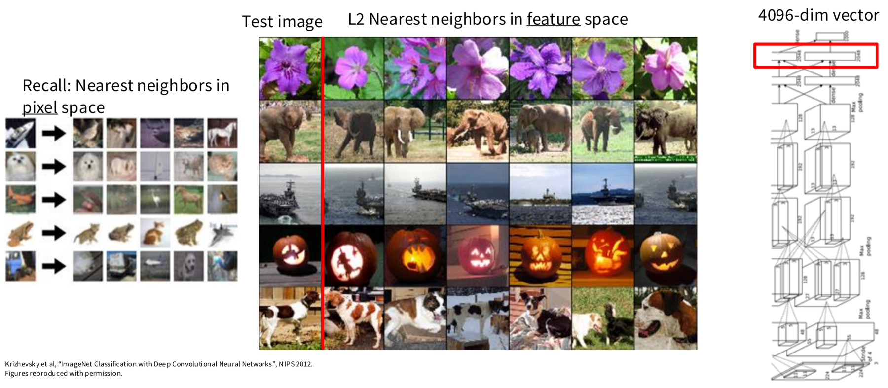
In pixel space the matches are poor. In feature space, flowers match flowers, elephants match elephants, and ships, pumpkins and dogs match their own class. So the features of a trained network carry meaning.
These features came from labels. The network was trained on ImageNet, which has a label for each image. The next figure shows the network: an image goes through five convolution layers and three fully connected layers. The red box marks the 4096-dimensional layer before the class labels.
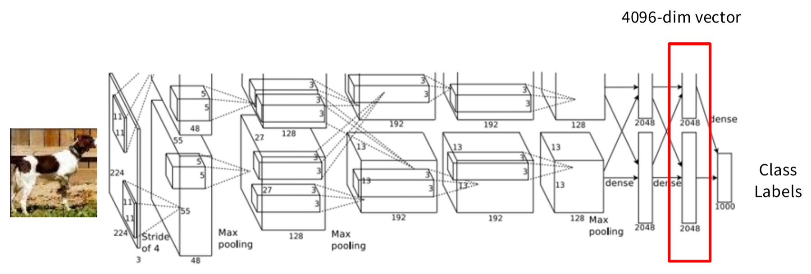
The problem is large-scale training: it needs a lot of labelled data. The question for the whole lecture follows: can we train neural networks without huge, manually labelled datasets?
A pretext task trains the encoder; a downstream task uses it
Self-supervised learning uses two datasets and two tasks.
- Pretext task. We define a task from the data itself. No person annotates anything. This could be called an unsupervised task. But we train it with supervised-style objectives, for example classification or regression.
- Downstream task. This is the application that we care about. We do not have a large dataset for it. The dataset is labelled.
The encoder is the part of the network that turns an input into a representation. We train the encoder on the pretext task. Then we move the trained encoder to the downstream task. This move is called transfer. Pre-training is the first stage, on the pretext task, that gives the encoder its starting weights.
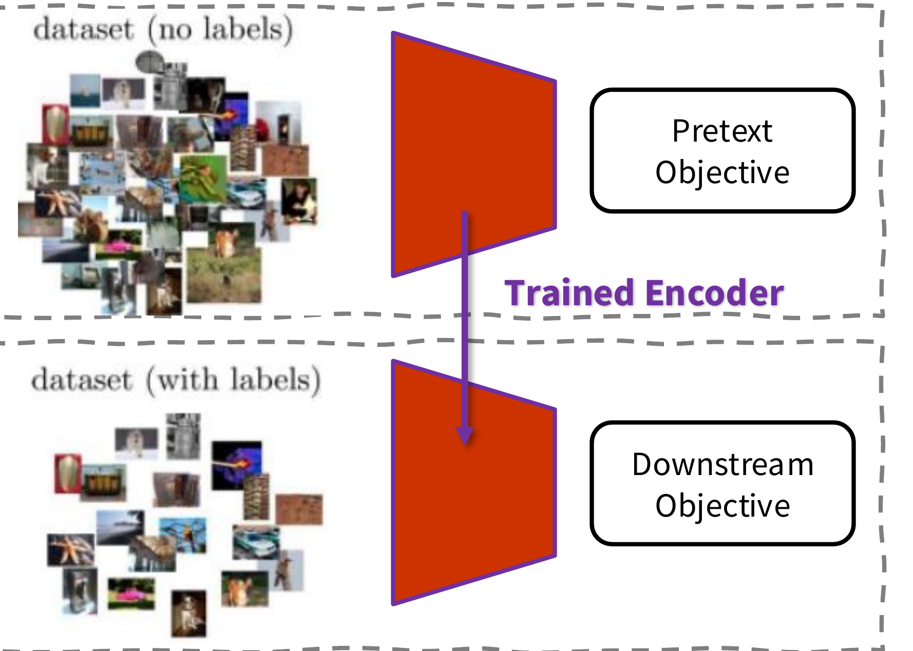
In the pretext step, data with no labels goes into an encoder. The encoder gives a learned representation. A decoder, a classifier or a regressor reads that representation. A decoder is a network that turns a representation back into an output such as an image. The labels or outputs are generated automatically from the data. A person writes none of them.
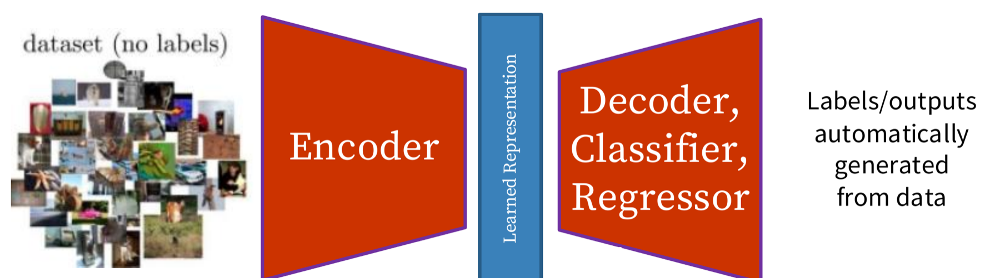
In the downstream step, we use a dataset with labels. The data goes into the same encoder. The pretext decoder is dropped. We train a small fully connected layer on the learned representation, with the labels. The source marks this step as supervised (it also calls it semi-supervised, because the labelled set is small).
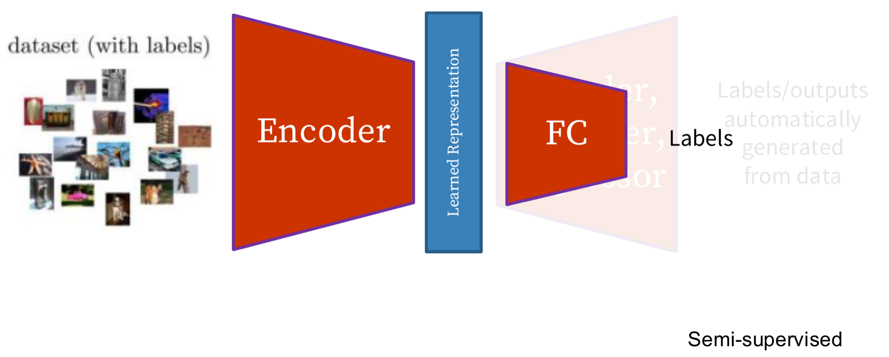
The next question is which pretext tasks make the encoder learn good features.
A good pretext task lets us make labels automatically
The figure shows four pretext tasks on one cat photo.
- Image completion. The top half of the image is hidden. The model completes it.
- Rotation prediction. The image is turned by an unknown angle. The model predicts the angle.
- Jigsaw. Four tiles are shuffled. The model puts them back in order.
- Colouring. The image is grey. The model adds colour.
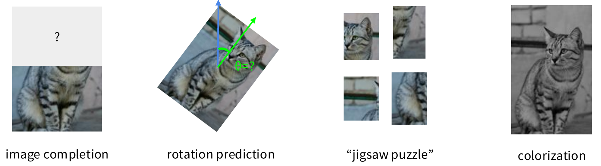
We make the label for all four tasks automatically from the image. The hidden half, the angle, the tile order and the colours are all known before we change the image. To solve the task, the model must learn good features. Part A studies several of these tasks.
We evaluate a method by training a shallow network on a small labelled set
The source lists five ways to evaluate a self-supervised method.
- Pretext task performance. How well does the model do on the task it trained on, without labels?
- Representation quality. Train a linear classifier on the learned representations (the linear evaluation protocol). Measure clustering performance. Draw a t-SNE plot, a 2-D map of the representations that shows how well the classes separate.
- Robustness and generalisation. How well does the model work on other datasets, and when the input changes?
- Computational efficiency. How much training time and how many resources does the method need?
- Transfer and downstream performance. Move the representations to a downstream supervised task and measure the result.
The common protocol has two steps. First, learn a good feature extractor from a pretext task. The example in the source is the prediction of image rotations. Second, attach a shallow network to the feature extractor. Train only the shallow network on the target task, with a small amount of labelled data.
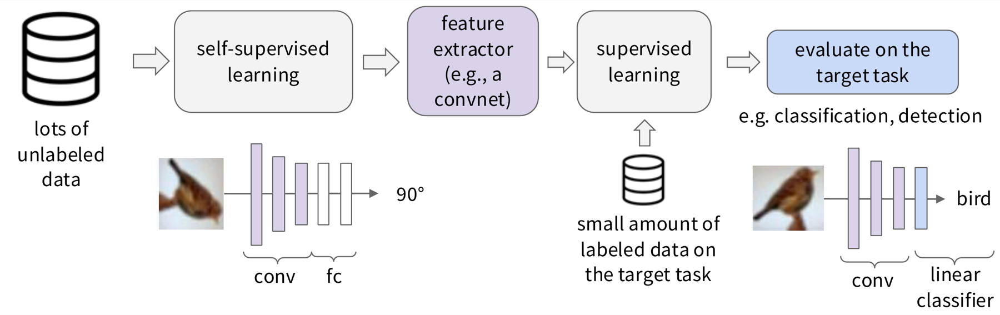
Self-supervised learning works in other fields, but images need an invented task
Self-supervised learning is not only for images. The figure shows four fields with one work each.
- Computer vision: predict the relative position of image patches (Doersch et al., 2015). This is today's lecture.
- Language modelling: GPT-4 (OpenAI, 2023), which is pre-trained to predict the next token.
- Speech synthesis: WaveNet (van den Oord et al., 2016).
- Robot and reinforcement learning: Dense Object Net (Florence et al., 2018).
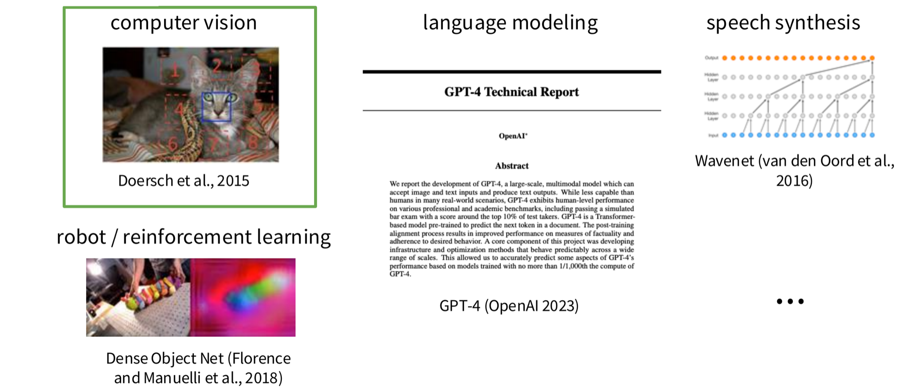
Language solved the problem first, as Lecture 1 showed. An image has no next word, so we must invent a pretext task. The next section starts with the simplest invented task, the prediction of image rotations.
Pretext tasks make labels from image transformations
The previous section ended with the broader picture: one pretext task is one way to get a training signal without human labels. This section looks at the first family of pretext tasks. The goal is that the model learns visual semantics, which means the meaning of what is in the image. The method is to change an image in a known way and to use the change as the target. The model must predict the change, and no person writes a label.
The lecture covers five tasks of this kind, then a sixth that is a larger idea. The terms pretext task, downstream task and representation are defined in Part A.
- Rotation prediction: the model finds out how far an image was turned.
- Relative patch location: the model finds out where one patch lies compared with another.
- Jigsaw puzzle: the model finds out how shuffled tiles were rearranged.
- Inpainting: the model predicts the pixels of a removed region.
- Colouring: the model predicts the colour of a grey image.
- Masked autoencoder (MAE): reconstruction at a larger scale. It comes after these five.
Each task needs a different skill, but all five work in the same way. The model can solve the task only if it learns something about objects, parts or scenes. The first task is rotation.
Rotation prediction: the model finds out how far an image was turned
Rotation prediction (Gidaris et al., 2018) turns each training image by 0, 90, 180 or 270 degrees. The model must say which of the four turns it received. The lecture states the hypothesis of the paper in these words: a model can find the correct rotation only if it has "visual commonsense" of how the object looks unperturbed.
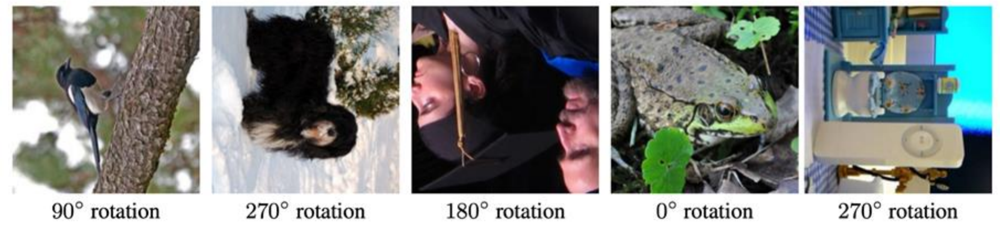
The idea is that a person can see at once when a photo is upside down. A person knows that a dog stands on its legs and that sky is above a field. A model that answers the rotation question correctly must also know these facts. So it must learn what objects look like and which way up they stand.
The rotation task is a four-way classification with free labels
The procedure has four steps. Let \(X\) be one training image.
- Make four copies of \(X\). Turn them by 0, 90, 180 and 270 degrees. Call the turned images \(X^0, X^1, X^2, X^3\). The label \(y\) is 0, 1, 2 or 3 and names the turn.
- Give each turned image to the same convolutional network \(F(\cdot)\). A ConvNet is a neural network built from convolution layers. It reads an image and gives one score for each class.
- The network outputs four probabilities, one for each turn. The probability for turn \(y\) is written \(F^{y}(X^{y})\).
- Training makes the probability of the correct turn as high as possible.
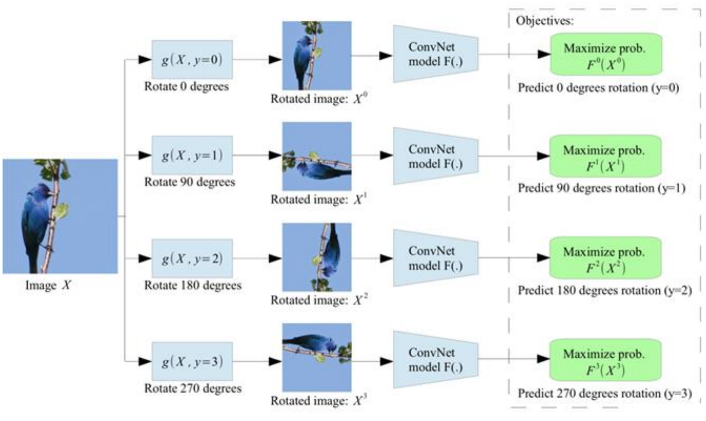
This is a classification with four classes. It is the same kind of task as supervised image classification, but the labels cost nothing. The program made the rotations, so it knows the labels.
A model learns any signal that solves the task. A bad pretext task has a shortcut that does not need the object. The paper chooses turns by multiples of 90 degrees for this reason. A program makes them with flip and transpose operations, and these leave no easily detectable low-level artifacts (§2.2). A model that used such a trace would learn nothing useful. In the ablation of §3.1, four turns gave better recognition than eight turns. The paper suggests that the four extra turns can add visible traces of the rotation, such as empty image areas.
With few labels, rotation features beat training from scratch
The first test is a semi-supervised test. Semi-supervised means that the model uses many images without labels and a few images with labels. The data set is CIFAR-10. It has small images in ten classes, and its full training set has 5,000 images per class.
- Pre-train the network by rotation prediction on the entire CIFAR-10 training set. No labels are used.
- Freeze the first two convolution blocks (conv1 and conv2). Frozen layers keep their weights during later training.
- Train the third convolution block and a linear classifier on a labelled subset. The subset has 20, 100, 400, 1,000 or 5,000 labelled images per class (§3.1).
- Compare with a supervised network that trains only on the same labelled subset.
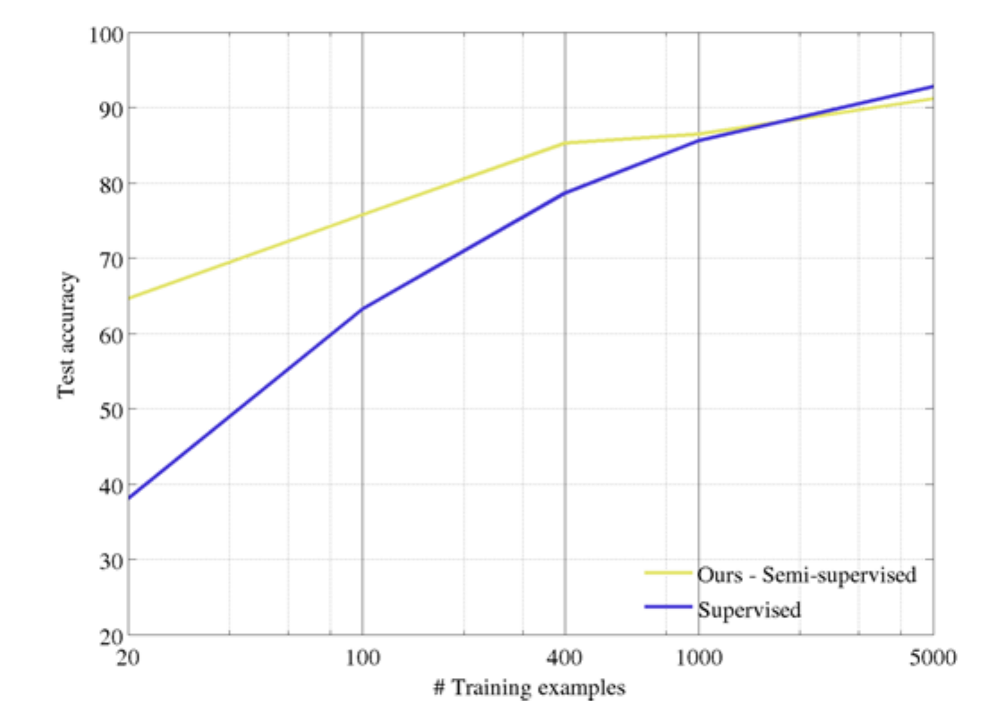
The yellow curve starts near 65% at 20 examples per class, and the blue curve starts near 38% (read from the figure, approximate). The gap becomes smaller as the number of labels grows. The curves meet at about 1,000 labels per class. The paper says the self-supervised model is better when the number of examples per category drops below 1,000. At 5,000 the supervised model is slightly higher, near 93% against 91% (read from the figure).
The conclusion: when labels are rare, features from a pretext task give a large gain. When labels are plentiful, they give no gain.
On a harder test, rotation is far above no pre-training but below full supervision
The second test uses larger data. The network is AlexNet, a convolutional network with five convolution layers and three fully connected layers (fc6 to fc8 are the last three). The steps are:
- Pre-train AlexNet by rotation prediction on all of ImageNet (1,281,167 training images). No labels are used.
- Transfer the weights to PASCAL VOC 2007 tasks. Fine-tune on its labelled data (5,011 images in the trainval set).
- Score three tasks: classification, detection and segmentation.
The table gives three scores. Classification and detection use mAP, mean average precision. It averages, over object classes, how well the model ranks correct detections. Segmentation uses mIoU, mean intersection over union. It measures how much the predicted region of each class overlaps the true region. For all three scores, higher is better. In the "Trained layers" row, "fc6-8" means that only the last three layers train, and "all" means that the whole network trains.
| Initial weights | Classification (%mAP, all layers) | Detection (%mAP) | Segmentation (%mIoU) |
|---|---|---|---|
| ImageNet labels (supervised) | 79.9 | 56.8 | 48.0 |
| Random | 53.3 | 43.4 | 19.8 |
| RotNet (rotation pre-training) | 72.97 | 54.4 | 39.1 |
Source: Gidaris et al. (2018), Table 7 (the rows of the table in the figure below that carry the three results).
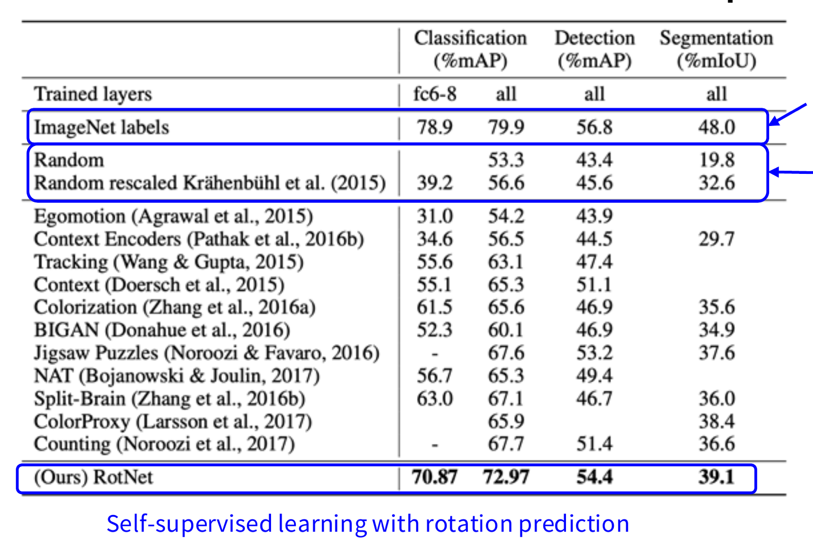
RotNet is the name of the network that the paper trains with rotation prediction. It scores far above random weights on all three tasks: 72.97 against 53.3 in classification, and 39.1 against 19.8 in segmentation. It scores below the supervised model: 72.97 against 79.9. In this table RotNet is also higher than every earlier self-supervised method in each of the three columns, including jigsaw puzzles and colouring (computed here by comparing the columns). The table has a second random row, "Random rescaled" (Krähenbühl et al. (2015)), with 56.6, 45.6 and 32.6. This random start is better than plain random, and RotNet is still higher.
The rotation model looks at the same object parts as a supervised model
The paper argues that rotation prediction forces the network to find the main objects in the image. To test this, it draws attention maps. An attention map is built from the size of the activations at each place in a convolution layer. It shows where the network puts its focus.
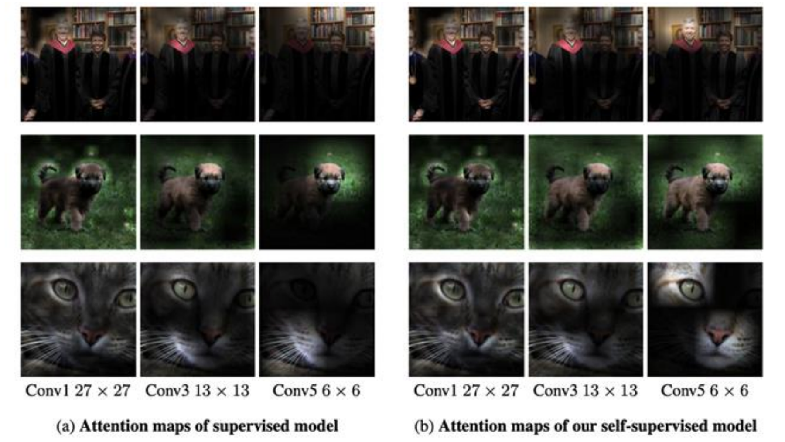
The two rows highlight roughly the same regions. The paper says that the rotation model focuses on object parts such as eyes, noses, tails and heads (§2.1). This agrees with the hypothesis: to predict rotation, the network learns to look at objects.
Rotation gives one global label for the whole image. The next task asks the model to compare parts of an image.
Patch location: the model finds out where one patch lies compared with another
Relative patch location (Doersch et al., 2015) works with small square patches. The steps are:
- Cut a centre patch from the image.
- Choose one of the eight patches that touch the centre patch (above, below, left, right and the four corners).
- The input \(X\) is the pair of patches. The label \(Y\) is the position of the second patch, a number from 1 to 8.
- The model classifies the pair into one of the eight positions. In the lecture's example, \(Y = 3\).
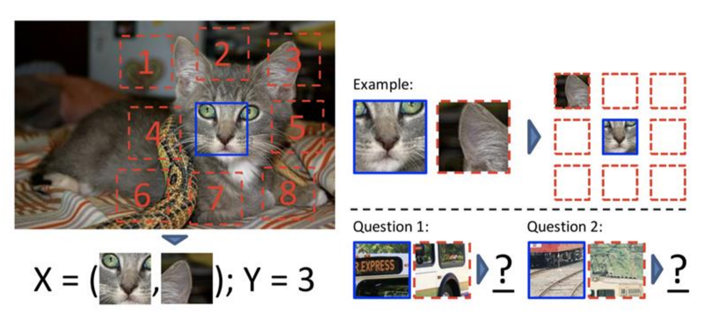
To answer, the model must know how parts of an object fit together. It must know, for example, that an eye lies above a nose. The paper uses two towers with shared weights, one for each patch, and joins their outputs (Fig. 3).
This task has shortcuts too. Straight lines that cross from one patch to the next give the answer. So the paper leaves a gap between the patches and moves each patch by a random jitter. A second shortcut is chromatic aberration, a small colour shift that a lens makes and that depends on the position in the image. The paper reduces it by changing the colour channels (§3 and §4.2).
Jigsaw: the model finds out how shuffled tiles were rearranged
The jigsaw task (Noroozi & Favaro, 2016) extends the patch task from a pair to a whole puzzle. The steps are:
- Cut a crop from the image and divide it into a 3 by 3 grid. Take one tile from each cell. The paper uses 64 by 64 pixel tiles from 75 by 75 pixel cells, with a random gap between tiles (Fig. 3, §3.3).
- Shuffle the nine tiles with a permutation. A permutation is one fixed order. It is chosen from a predefined set of permutations.
- Give the nine tiles to nine copies of one network with shared weights. The paper names this network the Context-Free Network. Each copy sees one tile alone.
- Join the nine outputs. The final layer is a softmax, a layer that gives one probability for each permutation in the set. The model predicts the index of the permutation that was used.
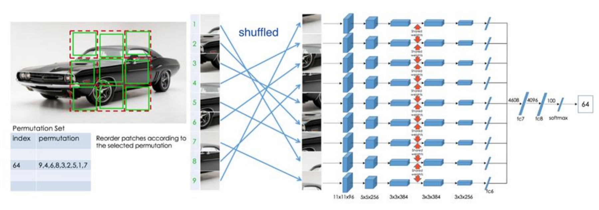
The model predicts the arrangement of the tiles, not the object category. To do this it must know what the parts of a car look like and where each part goes. The size of the permutation set controls how hard the task is. With more permutations the task is harder, and the paper reports that detection performance rises with the number of permutations (§4.2, Table 4). The figure uses a set with 100 permutations (the last layer before the softmax has 100 outputs).
Like the patch task, the jigsaw task has shortcuts: edges that continue from one tile to the next, and chromatic aberration. The paper adds a random gap between tiles and jitters the colour channels to remove them (§3.3).
All three tasks so far change the image and ask a question about the change. The next task removes pixels and asks the model to write them back.
Inpainting: the model predicts the pixels of a removed region
Inpainting means to fill a removed region of an image. The context encoder (Pathak et al., 2016) cuts a square from the centre of the image, and the model must predict the missing pixels. To do this, it must know what usually lies next to the visible parts.
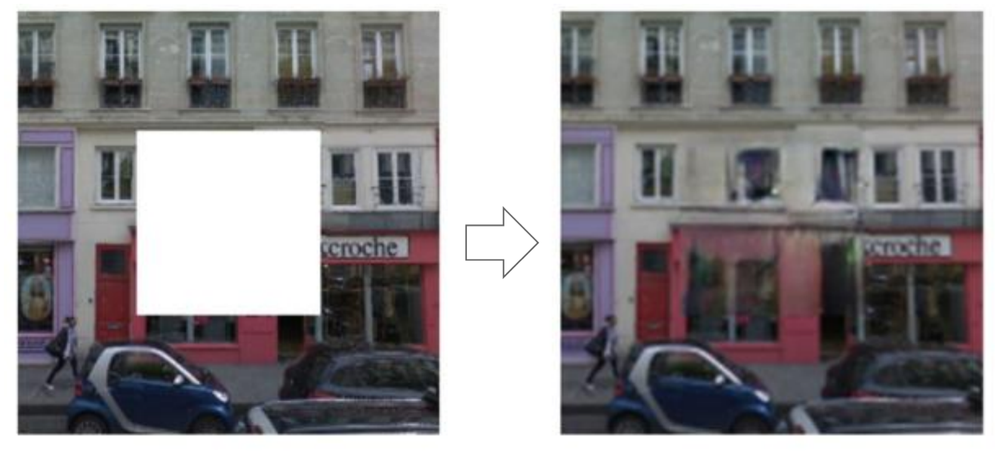
The model is an autoencoder. An autoencoder has an encoder and a decoder. The encoder turns the input into a feature vector. The decoder builds an image from that feature vector. The data flow has four steps:
- The image with the missing region goes into the encoder.
- The encoder features go through a channel-wise fully connected layer. This layer connects all places inside one feature map, but it has no connections between different feature maps. With \(m\) feature maps of size \(n \times n\), it has \(m n^4\) parameters. A normal fully connected layer has \(m^2 n^4\) (§3.1). So it is much smaller.
- The decoder builds an image from the result.
- The loss \(L\) compares the decoder output with the true content of the missing region.
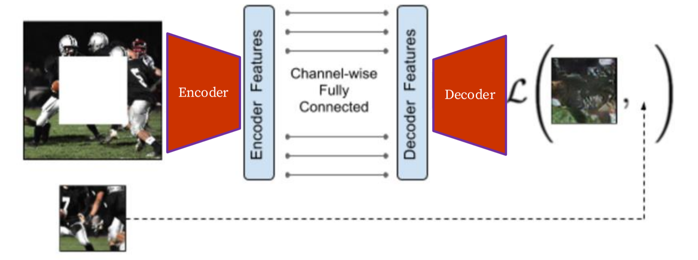
This model does not rebuild its whole input. Its job is only to predict a hidden part, so it does not need a small bottleneck. The paper uses features of size 6 by 6 by 256, which is 9,216 values, in both the encoder and the decoder (§3.1).
A reconstruction loss gives blurry fills; an adversarial loss makes them sharp
The first loss is the reconstruction loss. It measures how far the output is from the true pixels. The plain version gives a blurry fill. The rough colours are right, and the detail is lost.
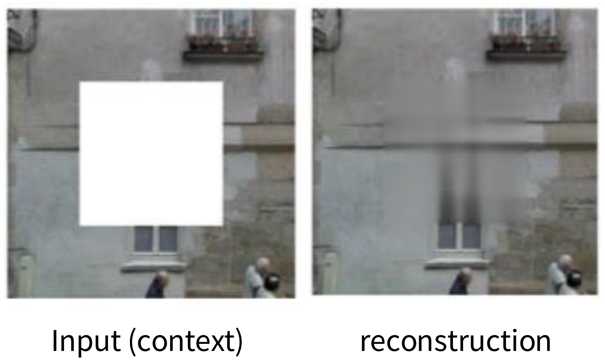
The paper gives the reason. A hole can have many correct fills. For a squared error, the safest output is the average of the possible fills, and an average of sharp images is blurry (§3.2). So the paper adds a second loss. The full loss is:
\[ L(x) = L_{recon}(x) + L_{adv}(x) \]Here \(x\) is the input image. \(L_{recon}\) is the reconstruction loss. \(L_{adv}\) is the adversarial loss. The paper also gives each term a weight: 0.999 for \(L_{recon}\) and 0.001 for \(L_{adv}\) (Eq. 3 and §3.2). The lecture slide omits these weights.
Reconstruction loss, step by step.
\[ L_{recon}(x) = \lVert M * (x - F_\theta((1 - M) * x)) \rVert_2^2 \]- \(M\) is the mask. It has the value 1 where a pixel is masked (removed) and 0 where it is not. The symbol \(*\) means element-wise multiplication: each pixel is multiplied by the pixel at the same place.
- \((1 - M) * x\) is the image with a hole. It keeps the pixels outside the mask and sets the masked pixels to zero.
- \(F_\theta\) is the network that we train, with weights \(\theta\). The paper calls it the context encoder. It takes the image with a hole and gives a full image.
- \(x - F_\theta(\cdot)\) is the error at each pixel: the true image minus the predicted image.
- \(M * (\cdot)\) keeps only the errors inside the hole. Errors outside the hole do not count.
- \(\lVert \cdot \rVert_2^2\) is the squared L2 norm. It squares each error and adds them up.
Adversarial loss, step by step. The adversarial loss uses a second network \(D\), the discriminator. It takes an image and outputs the probability that the image is real, and not an inpainted image.
\[ L_{adv} = \max_D \; \mathbb{E}\big[ \log D(x) + \log\big(1 - D(F((1 - M) * x))\big) \big] \]- \(\mathbb{E}\) is the average over the training images.
- \(D(x)\) is the probability that \(D\) gives to a real image. \(\log D(x)\) is large when \(D(x)\) is near 1.
- \(D(F((1 - M) * x))\) is the probability that \(D\) gives to an inpainted image. \(\log(1 - D(\cdot))\) is large when this probability is near 0.
- The maximum over \(D\) means that \(D\) learns to tell real images from inpainted ones.
- The network \(F\) has the opposite aim. It trains so that \(D\) cannot tell the difference: it pushes \(D(F(\cdot))\) towards 1. The paper trains \(F\) and \(D\) together, one after the other (§3.2).
This course does not cover adversarial training in detail. The one fact that matters here is the effect: the term pushes the output to look like a real image.
The deck's slide writes the adversarial term with the bracket of the expectation closed after \(\log D(x)\) and one bracket too many at the end. In the paper both terms are inside one expectation. The idea is the same.
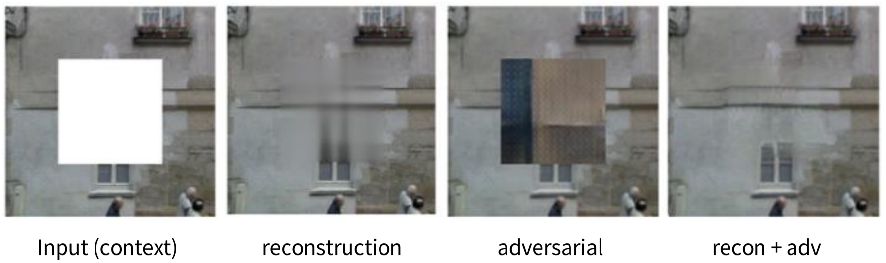
With the reconstruction loss only, the fill is blurry. With the adversarial loss only, the fill is sharp, but its texture does not fit the wall. With both losses, the fill is sharp and plausible. The two terms fix different faults.
Inpainting helps transfer, but it is far from full supervision
The test is the same as for rotation. The model learns on the ImageNet training set without labels. Then the weights transfer to PASCAL VOC. The paper tests classification and detection on VOC 2007 and segmentation on VOC 2012. For these transfer results the paper uses a context encoder with random-region masks and the reconstruction loss (§5.2).
| Pre-training method | Supervision | Pre-training time | Classification | Detection | Segmentation |
|---|---|---|---|---|---|
| ImageNet | 1,000 class labels | 3 days | 78.2% | 56.8% | 48.0% |
| Random Gaussian | initialisation | under 1 minute | 53.3% | 43.4% | 19.8% |
| Autoencoder | none | 14 hours | 53.8% | 41.9% | 25.2% |
| Agrawal et al. | egomotion | 10 hours | 52.9% | 41.8% | - |
| Wang et al. | motion | 1 week | 58.7% | 47.4% | - |
| Doersch et al. | relative context | 4 weeks | 55.3% | 46.6% | - |
| Context encoder (ours) | context | 14 hours | 56.5% | 44.5% | 30.0% |
Source: Pathak et al. (2016), Table 2. The lecture's figure shows the full table; the rows are listed here in the paper's order.
The context encoder is above the plain autoencoder and above random weights on all three tasks, with one exception: in detection, the autoencoder is 41.9% and the context encoder is 44.5%, which is still higher. The gain is largest in segmentation: 30.0% against 19.8% for random weights. Full ImageNet supervision stays far above: 78.2%, 56.8% and 48.0%. In classification and detection, the methods of Wang et al. and Doersch et al. score higher than the context encoder, but they need 1 week and 4 weeks of pre-training, against 14 hours. Do not compare these numbers with the rotation table: the two papers use different set-ups, and they report different values for the same supervised row (79.9 and 78.2).
The conclusion: inpainting gives useful features, but they are far from the features of full supervision. The next task uses colour.
Colouring: the model predicts the colour of a grey image
Colouring (Zhang et al., 2016) gives the model a grey image and asks for the colours. The paper writes the image in the Lab colour space. Lab splits an image into three channels. \(L\) is lightness: how bright each pixel is, from black to white. \(a\) and \(b\) are two colour channels. Channel \(a\) runs from green to red. Channel \(b\) runs from blue to yellow. The \(L\) channel alone is a grey image.
- Convert a colour image to Lab.
- The input \(X\) is the \(L\) channel, with \(X \in \mathbb{R}^{H \times W \times 1}\). \(H\) is the height and \(W\) is the width in pixels. There is one value per pixel.
- The network \(F\) predicts the colour channels \(\hat{Y} \in \mathbb{R}^{H \times W \times 2}\). There are two values per pixel, \(a\) and \(b\).
- The training target is the true \(a\) and \(b\) channels of the same image. The label is free, because the colour image is the source of both.
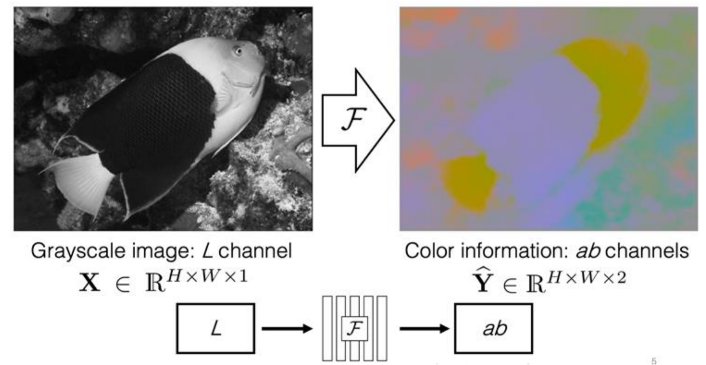
To see the result, join the input \(X\) and the prediction \(\hat{Y}\). The output is a colour image. In the lecture's example the fish is yellow and dark blue.
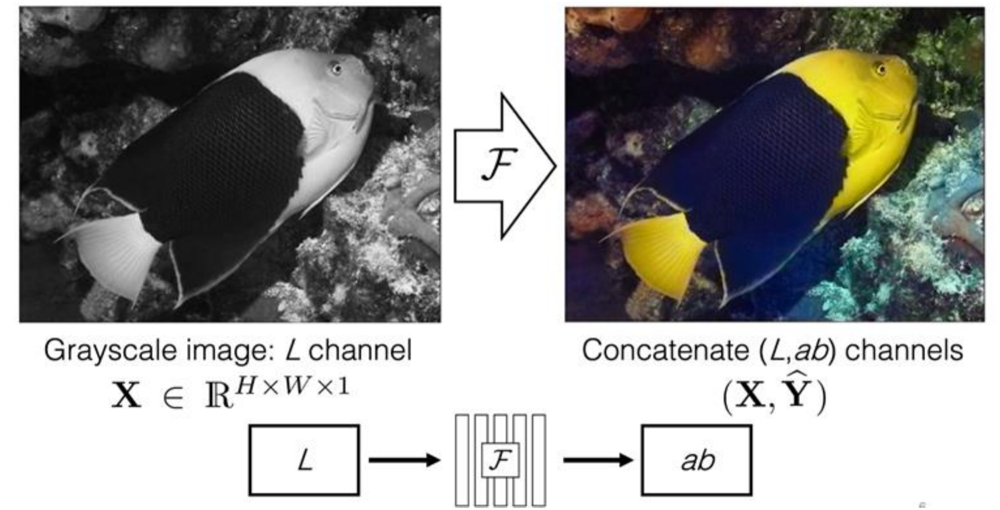
Why the loss of the paper is not a plain squared error
A grey object can have several correct colours. A car can be red, blue or black. A squared error would give the average colour, which is a dull brown-grey. The paper avoids this. It divides the \(a\)-\(b\) plane into 313 values and treats colouring as classification: the network outputs a probability for each value (Zhang et al., 2016, Fig. 3). This is background; the lecture only shows the task.
To solve this task, the model must know what the objects are. It must know that grass is usually green and that the sky is usually blue. The same idea leads to a better way to use the task.
Split-brain autoencoder: two networks, each predicts what the other one sees
A colouring network sees only the grey channel, so it learns only about one part of the data. The split-brain autoencoder (Zhang et al., 2017) fixes this with two networks:
- \(F_1\) sees only the grey channel and predicts the colour channels.
- \(F_2\) sees only the colour channels and predicts the grey channel.
- Together the two predictions give the predicted image \(\hat{X}\).
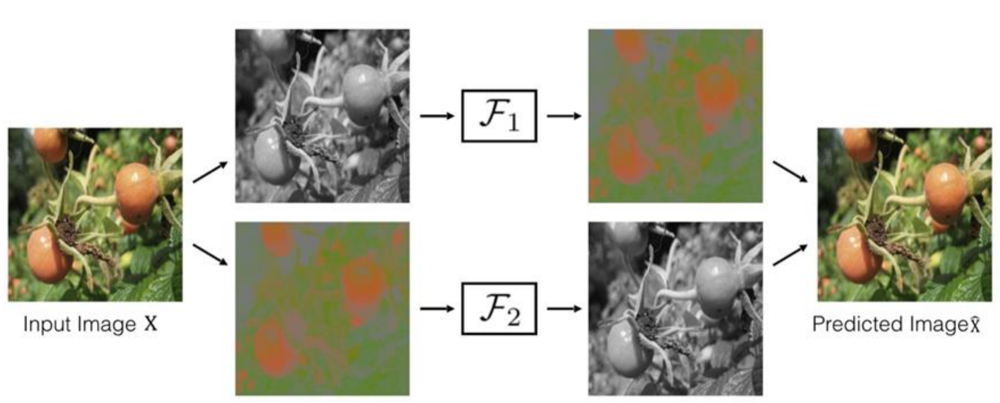
The general idea is cross-channel prediction. Split the input \(X\) into two parts, \(X_1\) and \(X_2\). The network \(F_1\) predicts \(\hat{X}_2\) from \(X_1\). The network \(F_2\) predicts \(\hat{X}_1\) from \(X_2\). The two predictions form \(\hat{X}\). Each half of the model learns to predict one part of the data from the other part. The split in the figure uses the lightness channel and the colour channels, but the idea also works with other splits (the paper gives an example with depth channels).
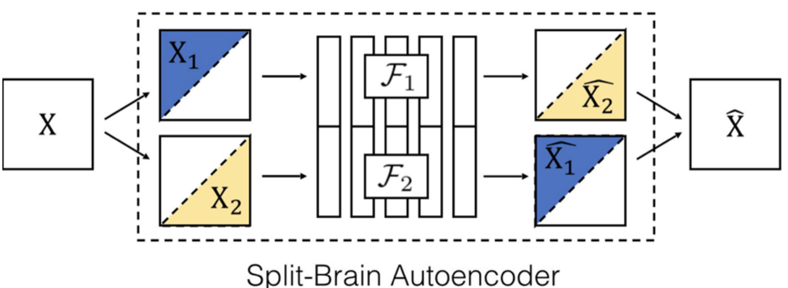
The paper joins the two networks by putting their feature maps side by side, layer by layer. The result is one network \(F\) that sees all channels. The next section shows what this gives.
Split-brain features are the best self-supervised features in this test
The test checks the features of each layer with a linear classifier. A linear classifier is one linear layer on top of frozen features. If it works well, the features already separate the classes. The steps are:
- Pre-train the network on all of ImageNet without labels. Concatenate the features of \(F_1\) and \(F_2\).
- Freeze the network. For each layer from conv1 to pool5, train a linear classifier on the labelled Places data set (Zhou et al., 2016). It has 205 scene classes (Zhang et al., 2017, Table 3).
- Measure top-1 accuracy. Top-1 accuracy is the share of images for which the highest-scoring class is correct.
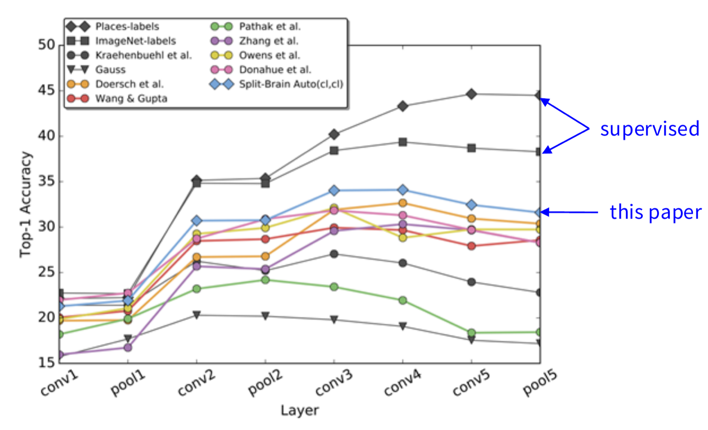
The two supervised curves (trained with Places labels and with ImageNet labels) are the highest, near 44% and 38% at the last layer (read from the figure, approximate). The split-brain autoencoder is at or near the top of the self-supervised methods at every layer from conv2 on, and clearly the highest from conv3 on. At pool5 it is near 31.5% (read from the figure). All self-supervised curves are below the supervised ones.
Colouring results: plausible colours, not true colours
Two examples show what a colouring model gives. These are results, not methods. In the first, an old black-and-white photo of a thylacine (also called a Tasmanian tiger) is coloured automatically. In the second, a black-and-white photo of Yosemite shows a bridge, trees, a lake and Half Dome, and the model colours it.
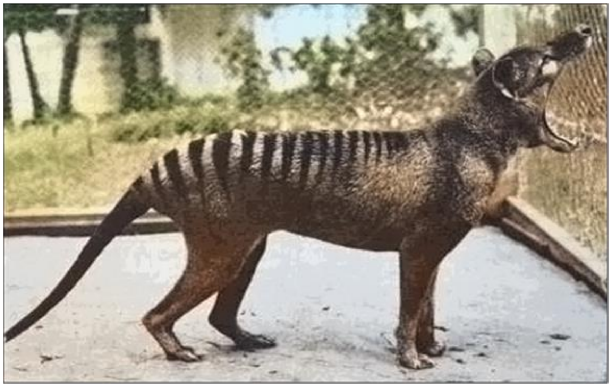
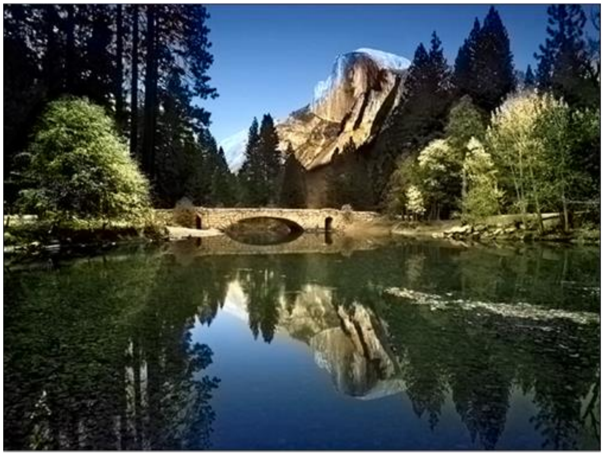
The colours look plausible. They are a guess and not a record of the true colours. The model learned what is likely, for example that grass is green. It does not know the real colours of that photo.
Masked autoencoders hide most of the image and still rebuild it
The last pretext tasks asked a model to predict a missing part of an image: a missing region (inpainting) or missing colour channels (colouring). The masked autoencoder (MAE) of He et al. (2022) takes the inpainting idea further. It hides a much larger part of the image and asks the model to rebuild it.
The figure shows one photo at two masking levels. The top row hides 50% of the patches. The bottom row hides 75%. A patch is a small square piece of the image. A mask is the set of patches that the model cannot see.
Each row has four images, from left to right:
- the masked input, where grey squares replace the hidden patches;
- the reconstruction, which is the model output for the whole image;
- the reconstruction with the visible patches pasted back;
- the original image.
At 75% masking the reconstruction is blurrier, but it still has the correct layout, and it is still close to the original.
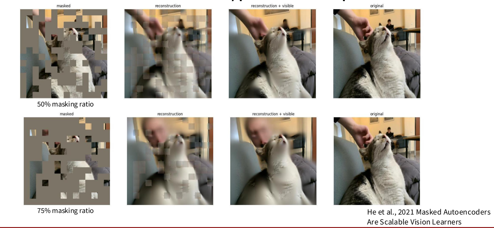
The next sections follow MAE step by step, as the figure below shows. The input image has most of its patches masked. Only the visible patches go into a large encoder. The encoder outputs, together with grey mask tokens, go into a small decoder. A mask token is one shared, learned vector that stands for a missing patch (He et al., 2022, §3). The decoder outputs the target image.
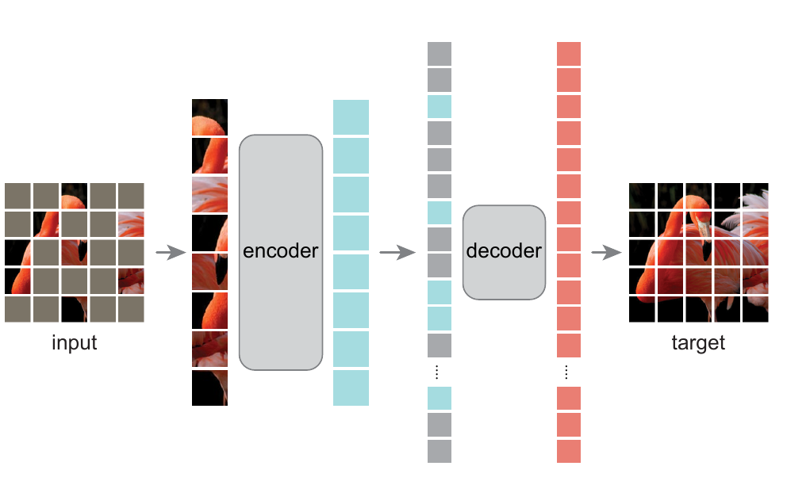
First question: how does MAE choose the patches to hide?
The mask hides 75% of the patches, chosen at random
MAE copies the first step of the original Vision Transformer (ViT). A ViT cuts an image into patches that do not overlap and gives the patches to a Transformer. MAE then picks a very large share of these patches, 75%, uniformly at random, and masks them.
For a 224 × 224 image and 16 × 16 patches, the image has 14 × 14 = 196 patches (He et al., 2022, ViT-L/16 on 224 × 224 inputs). A 75% mask hides 147 of them. The encoder sees the other 49 (computed here).
The high ratio has two effects.
- The task is hard enough to be useful. If the model could fill the gaps by copying nearby pixels, it would learn little. At 75%, it must use the content of the whole image.
- The encoder can be very large. The encoder uses no mask tokens. It sees only the visible 25%, so its input is short and its cost is low.
The paper reports that skipping the mask tokens in the encoder reduces the total training FLOPs by 3.3× (Table 1c). FLOPs are floating-point operations, a count of arithmetic work.
Next: what does the encoder do with the visible patches?
The encoder reads only the visible patches
The encoder works only on the unmasked patches, which are 25% of the image. It has three steps:
- It turns each visible patch into a vector with a linear projection.
- It adds a positional embedding to each vector. This embedding tells the model where the patch lies in the image.
- It passes the vectors through a stack of Transformer blocks.
The visible patches are a small part of the input, so the encoder can be very large. The default decoder has 9% of the FLOPs per token of the encoder (ViT-L), as He et al. (2022), §4.1 report. The encoder therefore costs about 11 times more per token than the decoder (computed here, 1 ÷ 0.09).
Next: how does the model go from encoder outputs to a full image?
The decoder rebuilds the pixels and is thrown away after training
The decoder receives two kinds of vectors: the encoder outputs for the visible patches, and the shared mask tokens placed at the masked positions. It adds positional encodings to all of them, so each mask token knows which place it fills. It then uses Transformer blocks. A final linear projection gives the pixel values of each patch.
The decoder exists only for reconstruction. After pre-training, the model uses only the encoder to produce image representations. For this reason the decoder design does not depend on the encoder design. It can be narrow and shallow. The paper's default decoder has 8 blocks and a width of 512, against 24 blocks and a width of 1024 for ViT-L (§4.1).
The deck calls this an asymmetric autoencoder design. A classical autoencoder uses an encoder and a decoder of about the same size. In MAE, the encoder is large and sees few patches, and the decoder is small and sees all patches.
Next: what does the model learn from the decoder output?
The loss is the pixel error on the masked patches only
The reconstruction loss is the mean squared error (MSE) in pixel space between the input image and the reconstructed image. MAE computes it only on the masked patches.
The deck states the loss in words. We write it with our own symbols, so that each term has a name:
\[ \mathcal{L} \;=\; \frac{1}{|M|}\sum_{i \in M} \frac{1}{P} \sum_{j=1}^{P} \left( x_{i,j} - \hat{x}_{i,j} \right)^2 \]- \(M\) is the set of masked patches, and \(|M|\) is how many there are.
- \(P\) is the number of pixel values in one patch. For a 16 × 16 colour patch, \(P = 16 \times 16 \times 3 = 768\) (computed here).
- \(x_{i,j}\) is the true value of pixel value \(j\) in patch \(i\).
- \(\hat{x}_{i,j}\) is the value that the decoder predicts for it.
Step by step: for each masked patch, take the squared difference of every pixel value; average these over the patch; then average over all masked patches. Visible patches do not enter the sum. The paper chose this rule because it gave slightly higher accuracy: a loss on all pixels lowered accuracy by about 0.5% (He et al., 2022, §3, footnote 1).
Extra: the paper's normalised-pixel variant
The paper also tests a target in which each patch is first normalised with its own mean and standard deviation. In Table 1d this gives 85.4 for fine-tuning and 73.9 for linear probing, against 84.9 and 73.5 for raw pixels. The comparison with other methods below uses the normalised target and 1600 epochs of pre-training (Table 3 caption).
To compare MAE with other methods we need two ways of testing the encoder. They come next.
Linear probing and fine-tuning test the features in two ways
After pre-training, we test the encoder on a labelled task. There are two common protocols.
- Linear probing. The pre-trained model stays fixed. We add one linear layer at the end and train only this layer to predict the labels. The score measures the quality of the learned representation under strict conditions.
- Fine-tuning. The pre-trained model is trained further. It is not fixed. We add one or more layers, possibly with non-linearities. The score shows how well the model adapts to a new task.
The diagram has the encoder at the left and the new layer at the right. In the top diagram, a snowflake marks the frozen encoder and a flame marks the trained linear layer. In the bottom diagram, both the encoder and the new layer carry a flame.
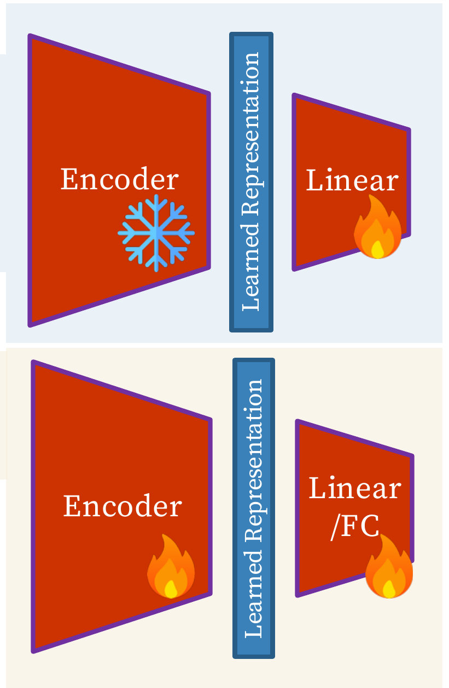
In MAE the two scores can differ a lot, so the paper reports both. The ablation studies below show this.
A high masking ratio works best, and linear probing reacts more to it
MAE has many design choices. An ablation study changes one choice at a time and keeps the others fixed. It shows which choices matter. The paper's list includes:
- masking ratio, mask sampling method, and mask token (used or not in the encoder);
- decoder depth and decoder width;
- reconstruction target and data augmentation;
- training schedule.
The first study varies the masking ratio. The paper trains a ViT-L with ratios from 10% to 90%. The figure has two panels with the ratio on the horizontal axis. The vertical axis is ImageNet-1K validation accuracy in percent. The top panel is fine-tuning. The bottom panel is linear probing.
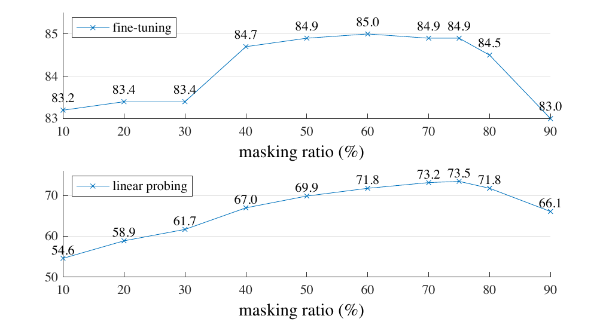
| Masking ratio (%) | 10 | 20 | 30 | 40 | 50 | 60 | 70 | 75 | 80 | 90 |
|---|---|---|---|---|---|---|---|---|---|---|
| Fine-tuning (%) | 83.2 | 83.4 | 83.4 | 84.7 | 84.9 | 85.0 | 84.9 | 84.9 | 84.5 | 83.0 |
| Linear probing (%) | 54.6 | 58.9 | 61.7 | 67.0 | 69.9 | 71.8 | 73.2 | 73.5 | 71.8 | 66.1 |
Fine-tuning is almost flat from 40% to 80%, between 84.5 and 85.0. Its peak is 85.0 at 60%, and 75% gives 84.9. Linear probing changes much more. It rises from 54.6 at 10% to a peak of 73.5 at 75%, then falls to 66.1 at 90%.
The ratio is not the only choice. The way the hidden patches are picked also matters.
Random masks beat block and grid masks
A second study compares three ways to choose the masked patches (He et al., 2022, §4.1):
- Random: pick patches uniformly at random. This is the default.
- Block: remove large blocks of neighbouring patches.
- Grid: keep one patch in every four, in a regular pattern.
The figure shows an ambulance and a fox. Each has the masked input and the reconstruction for each of the three methods.
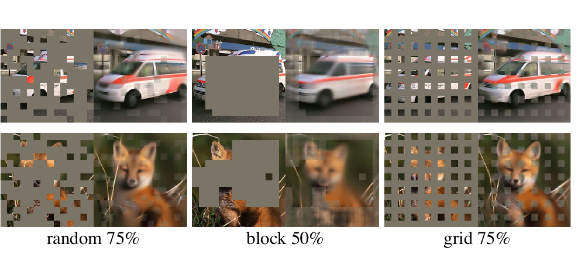
The table gives the ImageNet-1K accuracy of a ViT-L for each choice. Here "ft" is fine-tuning and "lin" is linear probing.
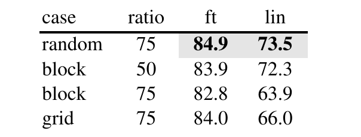
Random sampling is best on both scores, with 84.9 and 73.5. Block sampling works at a ratio of 50% (83.9 and 72.3), but it degrades at 75% (82.8 and 63.9). Block masks make the task harder: the paper reports a higher training loss and blurrier reconstructions. Grid sampling makes the task easier. The paper reports a lower training loss and sharper reconstructions, but the features are worse (84.0 and 66.0).
These choices set the default recipe. The next question is how this recipe compares with other methods.
MAE has the best fine-tuning accuracy at every model size
The left of the figure shows four MAE examples with 80% of the patches masked. Each has the masked image, the MAE reconstruction and the original. The images show a clock, a bus, a dog and a lamp.
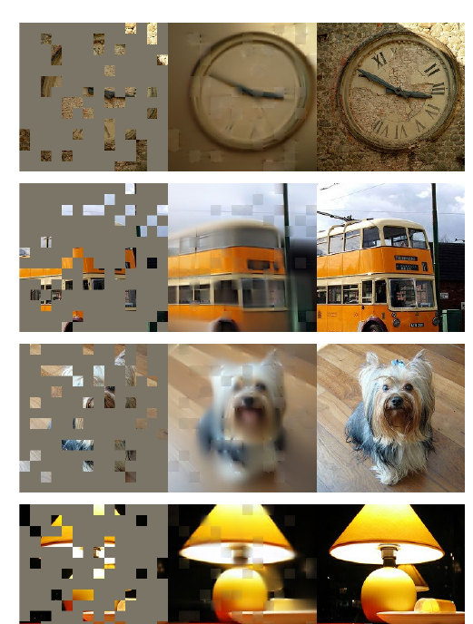
The table gives ImageNet-1K fine-tuning accuracy. ViT-B, ViT-L and ViT-H are three sizes of the Vision Transformer, from smaller to larger. "ViT-H448" is ViT-H at image size 448 instead of 224. "Scratch" means training with no pre-training. DINO and MoCo v3 are contrastive-type methods, which Part B covers. BEiT also hides patches, like MAE, but it predicts discrete tokens from a tokenizer pre-trained on 250M DALL-E images (§4.1, Table 3).
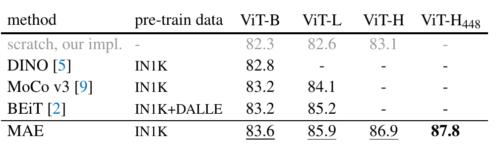
| Method | Pre-train data | ViT-B | ViT-L | ViT-H | ViT-H448 |
|---|---|---|---|---|---|
| scratch | none | 82.3 | 82.6 | 83.1 | - |
| DINO | IN1K | 82.8 | - | - | - |
| MoCo v3 | IN1K | 83.2 | 84.1 | - | - |
| BEiT | IN1K + DALL-E | 83.2 | 85.2 | - | - |
| MAE | IN1K | 83.6 | 85.9 | 86.9 | 87.8 |
MAE has the best score in every column. The gap to the other methods is small for ViT-B and larger for ViT-L. The gain over training from scratch grows with model size: 1.3 points for ViT-B, 3.3 for ViT-L and 3.8 for ViT-H (computed here from the table). The paper says that for bigger models the challenge is to reduce overfitting (§4.2).
MAE is one of several pretext tasks. The next section sums up what they share and where they fail.
Pretext tasks teach visual common sense, but each is tedious to invent
All the tasks in this part work from image transformations. They are rotation prediction, jigsaw, inpainting, colouring and, in its newest form, MAE. They share one idea.
- The tasks focus on "visual common sense". To solve them, the model must learn good features of natural images. One example is a semantic representation of an object category.
- We often do not care how well the model solves the pretext task. We care how useful the learned features are for downstream tasks: classification, detection and segmentation.
The summary names two problems.
- Each pretext task is tedious to invent by hand.
- The learned representations may not be general.
The second problem leads to the last topic of this part.
A more general pretext task: pull together the same object, push apart different objects
The four pretext tasks, shown below on one cat photo, are image completion, rotation prediction, a jigsaw puzzle and colouring. The deck warns that the learned representations may be tied to the one task that trained them. A model trained to predict rotations may learn what it needs for rotations and nothing more. The question is: can we find a more general pretext task?
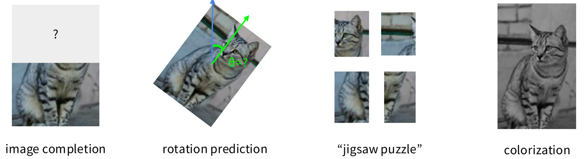
The idea in the next figure uses the same transformed versions in a new way. All four transformed versions of the cat photo come from one original, so they show the same object. A puppy photo shows a different object. We can say what should be close and what should be far apart, without any class label.
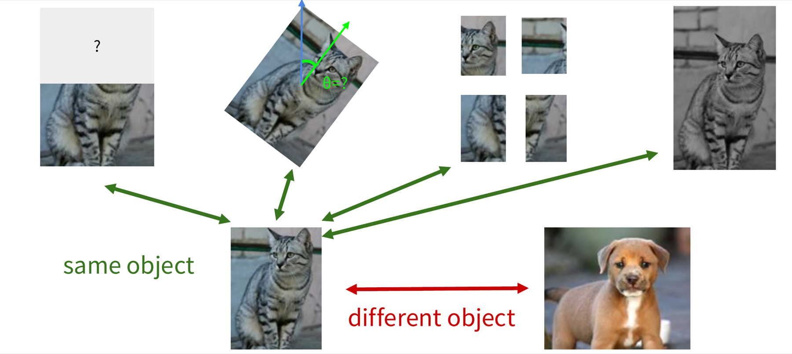
This is contrastive representation learning. The model learns a representation in which the cat and its transformed versions attract (are close), and the cat and the puppy repel (are far apart). Part B defines the loss and the methods.
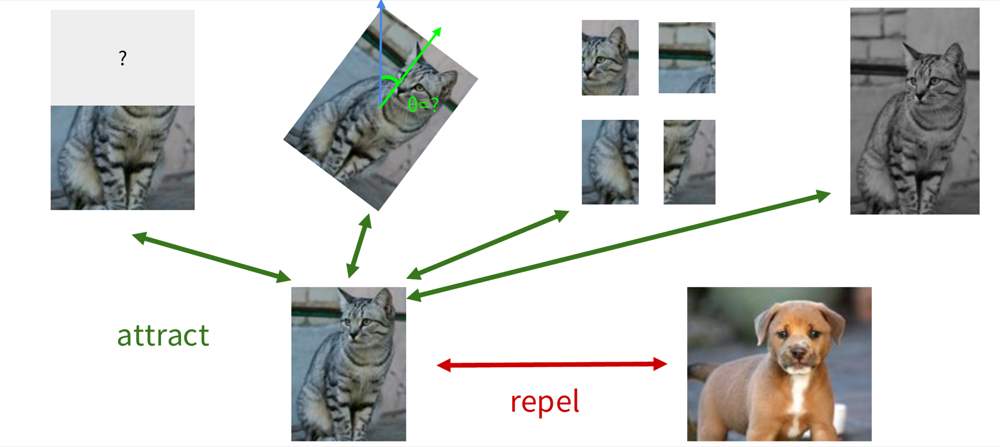
Part A: key methods and insights
| Topic | What to keep |
|---|---|
| Pretext task | It makes the label from the data itself, with no manual annotation. We keep the learned features for a downstream task. |
| Examples | Predict rotations, inpaint, rearrange pieces (jigsaw), colourise. |
| MAE | It hides patches of the image and reconstructs the missing pixels. |
| What we measure | How useful the features are downstream, not the pretext score. |
| Problems | Each pretext task is tedious to invent, and the features may not be general. |
Next in Part B: contrastive learning, which tries to remove these two problems.
Contrastive representation learning
Part A made a label from the data with one hand-built task at a time. Can one general rule learn features from pairs of samples instead? Part B answers in four steps: the idea and its loss, instance contrast (SimCLR and MoCo), sequence contrast (CPC), and self-distillation (DINO).
This part follows Stanford CS231n Lecture 12 (Fei-Fei et al., 2026). The text is ours; the results come from the papers cited.
What Part A left open
Part A used pretext tasks. A pretext task makes a label from the data itself (rotation, inpainting, jigsaw, colouring). A masked autoencoder (MAE) hides patches of an image and reconstructs them. After training, we keep the features and use them for a downstream task.
Each pretext task is slow to invent, and the features may not be general. Part B asks for one rule that works for many kinds of data. The rule is contrastive learning. It compares samples with each other. It does not predict a label or a pixel.
| Segment | Question | Methods |
|---|---|---|
| 1. Intuition and formulation | What is the loss? | InfoNCE |
| 2. Instance contrast | How do we get positive and negative samples from images? | SimCLR, MoCo, MoCo v2 |
| 3. Sequence contrast | How do we use the order of a sequence? | CPC |
| 4. Self-distillation without labels | Can a network learn from itself? | DINO |
The goal: high score for positive pairs, low score for negative pairs
Contrastive learning uses three kinds of sample. The reference sample is \(x\). A positive sample \(x^+\) is a transformed copy of the reference. A negative sample \(x^-\) is a different image. In the example, the reference is a photo of a cat. The positives are a rotated cat, a cat with part of the image hidden, patches of the cat, and a grey-scale cat. The negative is a photo of a puppy.
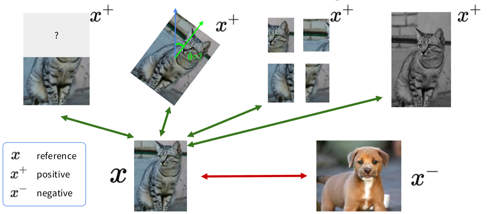
We choose a score function \(s\). It gives a high number for two similar vectors and a low number for two different vectors. We then train an encoder \(f\). The encoder maps an input to a feature vector. We want:
\[ \mathrm{score}(f(x), f(x^+)) \gg \mathrm{score}(f(x), f(x^-)) \]In words: the encoder must give the reference and its positive a much higher score than the reference and a negative. The sign \(\gg\) means "much larger than". The sections below turn this wish into a loss.
The loss finds the positive among N samples
Take one reference \(x\), one positive \(x^+\) and \(N-1\) negatives \(x^-_1, \dots, x^-_{N-1}\). The loss is:
\[ L = -\mathbb{E}_X\left[\log\frac{\exp(s(f(x), f(x^+)))}{\exp(s(f(x), f(x^+))) + \sum_{j=1}^{N-1}\exp(s(f(x), f(x^-_j)))}\right] \]- Score the reference against the positive: \(s(f(x), f(x^+))\). Take its exponential. This is the top of the fraction.
- Score the reference against each of the \(N-1\) negatives. Take the exponential of each and add them. Add the positive term. This is the bottom of the fraction.
- The fraction is a number between 0 and 1. It is large when the positive scores much higher than the negatives.
- Take the logarithm and change the sign. A large fraction gives a small loss. \(\mathbb{E}_X\) is the average over many sets of samples \(X\).
This form is known from classification. It is the cross-entropy loss of a softmax classifier with \(N\) classes. A softmax turns \(N\) scores into \(N\) probabilities that add up to 1. The task is to find the positive sample among the \(N\) samples. The same photo can appear in a negative role: in the example, a second cat photo is a negative, because the method does not know classes.
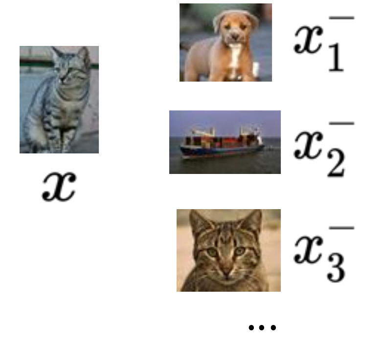
This loss is called InfoNCE and it bounds mutual information
The loss above has a name: the InfoNCE loss (van den Oord et al., 2018). The name comes from noise-contrastive estimation. Mutual information (MI) measures how much one vector tells us about another vector. InfoNCE gives a lower bound on the MI between \(f(x)\) and \(f(x^+)\):
\[ MI[f(x), f(x^+)] - \log(N) \geq -L \]Here \(N\) is the number of samples (one positive and \(N-1\) negatives), and \(L\) is the loss. A lower loss gives a higher guaranteed MI. The bound gets tighter when \(N\) is larger. So more negative samples make the loss a better measure. The original paper states the same bound as \(I(x_{t+k}, c_t) \geq \log N - L_N\) (van den Oord et al., 2018, Sec. 2.3). Poole et al. (2019) give a detailed derivation. We do not derive the bound here.
The next question is practical: how do we make positive pairs from images? SimCLR answers with data augmentation.
SimCLR: a simple framework with augmentation, an encoder and a projection head
SimCLR is a framework for contrastive learning of visual representations (Chen et al., 2020). It makes four choices.
- Positive samples. It takes one image and applies two random data augmentations (random changes to an image). Each result is one view. The two views of one image form a positive pair. The augmentations are random cropping, random colour distortion and random blur.
- Encoder. A network \(f(\cdot)\) maps each view to a representation \(h\).
- Projection head. A small network \(g(\cdot)\) maps \(h\) to a vector \(z\). Contrastive learning is applied on \(z\).
- Score. The score is the cosine similarity of two vectors \(u\) and \(v\):
Here \(u^T v\) is the dot product, and \(\lVert u\rVert\) is the length of \(u\). The result is between -1 and 1. It is 1 when the two vectors point the same way.
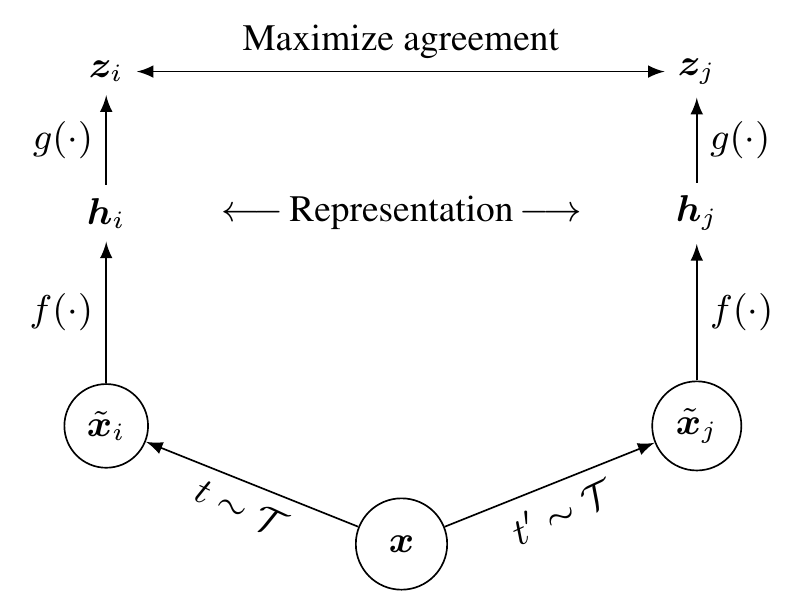
The loss pulls \(z_i\) and \(z_j\) of the same image together. It pushes them away from the vectors of other images. The next section shows what the augmentations are.
Augmentations make positive pairs, and each one changes the picture differently
The figure shows one photo of a dog under ten changes: (a) the original; (b) crop and resize; (c) crop, resize and flip; (d) colour drop; (e) colour jitter; (f) rotate; (g) cutout; (h) Gaussian noise; (i) Gaussian blur; (j) Sobel filtering. Each change alters a different property of the picture: position, size, colour, sharpness or edges. The encoder has to give similar vectors for all of them. So the encoder must ignore these properties and keep what stays the same: the content, a dog.
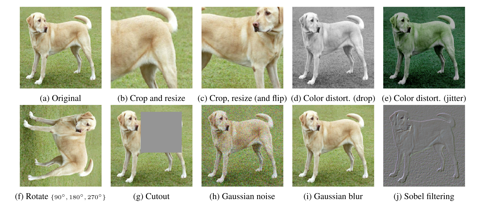
The deck uses three of these in its list: random cropping, colour distortion and blur. The choice of augmentation decides what the encoder learns to ignore. We return to this in the MoCo v2 comparison.
The SimCLR loss uses every other image in the batch as a negative
SimCLR does not draw negatives from a separate set. It uses the other images in the same batch. Algorithm 1 of Chen et al. (2020) runs as follows for one minibatch of \(N\) images.
- For each image, sample two augmentation functions \(t\) and \(t'\). Make two views. This gives \(2N\) views.
- Pass each view through the encoder \(f\) to get \(h\). Pass \(h\) through the projection head \(g\) to get \(z\).
- Compute the cosine similarity \(s_{i,j}\) of every pair of the \(2N\) vectors \(z\).
- Define the loss for the positive pair \((i, j)\):
The symbol \(\tau\) is the temperature. It is a number that scales the similarities before the exponential. The symbol \(\mathbb{1}_{[k\neq i]}\) is 1 when \(k\) is not \(i\) and 0 otherwise. So the sum runs over all views except the view \(i\) itself. For one positive pair, the other \(2(N-1)\) views are negatives (Chen et al., 2020, Sec. 2.1).
- Average \(\ell\) over both orders of every positive pair: \((i,j)\) and \((j,i)\). Use each of the \(2N\) views once as the reference.
- Update \(f\) and \(g\) to reduce this average.
At the end of training, we keep \(f\) and throw away \(g\). The projection head is used only during training. A batch of 8,192 images gives 16,382 negatives for each positive pair (Chen et al., 2020, Sec. 2.2). The loss has the same form as InfoNCE: one positive, many negatives, and a softmax over them.
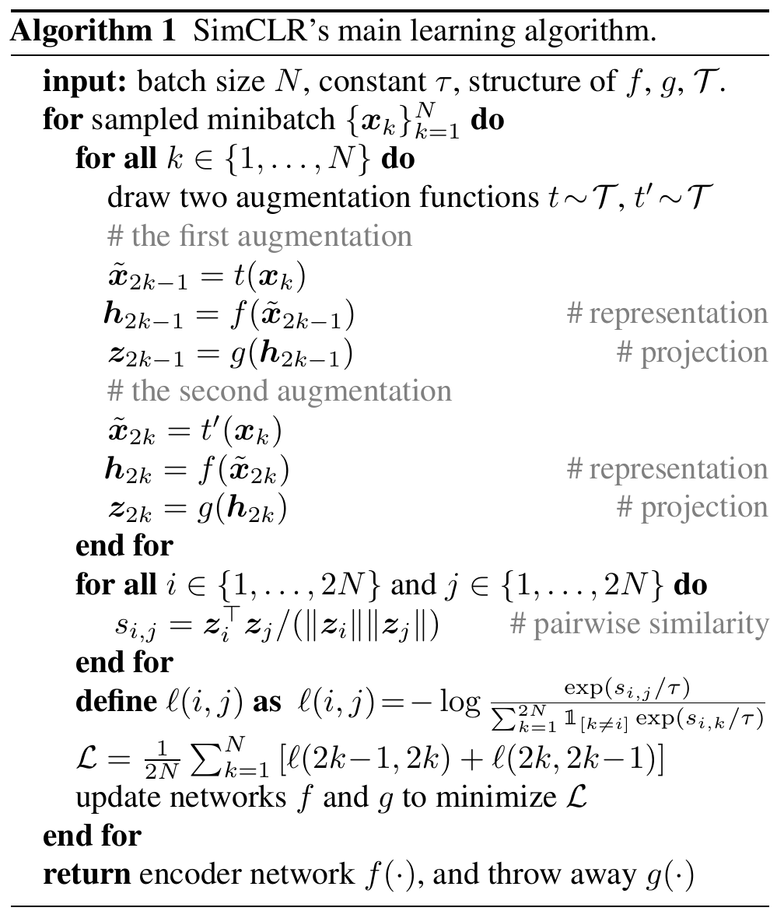
A linear classifier on SimCLR features matches a supervised ResNet-50
The first test is linear evaluation. We train the encoder on the whole ImageNet training set with SimCLR and no labels. We then freeze the encoder. We train one linear classifier on top of the features with labelled data. The accuracy of this classifier measures the quality of the features. The encoder is a ResNet-50 (a standard image network) or a wider version of it.
The figure plots ImageNet top-1 accuracy (y-axis) against the number of parameters (x-axis, in millions). Each dot is one method. The red stars are SimCLR. The grey cross is a supervised ResNet-50.
| Encoder | Parameters | Top-1 accuracy (%) |
|---|---|---|
| SimCLR, ResNet-50 | 24 M | 69.3 |
| SimCLR, ResNet-50 (2×) | 94 M | 74.2 |
| SimCLR, ResNet-50 (4×) | 375 M | 76.5 |
The label "2×" and "4×" means that the network is 2 or 4 times wider. Numbers from Chen et al. (2020), Table 6 and Fig. 1. The 4× model reaches the level of the supervised ResNet-50 marker. All other self-supervised methods in the figure lie below it.
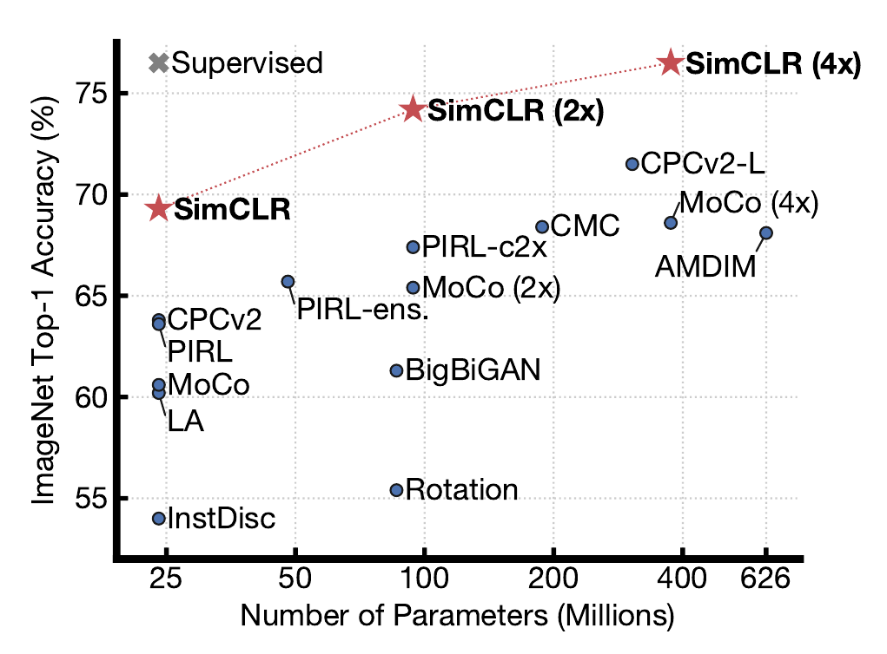
Background: the supervised baseline in the paper
The grey cross in Fig. 1 is at 76.5. In its appendix, the paper reports its own supervised ResNet-50 baseline at 76.3 and its supervised ResNet-50 (4×) at 78.3. So the 4× SimCLR model (76.5) matches the supervised ResNet-50, and is 1.8 points below the supervised 4× model (computed here).
Linear evaluation uses all the labels. The next test asks what happens when most labels are missing.
With 1% of the labels, SimCLR features beat supervised training by a wide margin
In the second test, we train the encoder with SimCLR on all of ImageNet without labels. Then we fine-tune it with only 1% or 10% of the labels. Fine-tuning trains the whole network on the labelled data. The table gives top-5 accuracy (the correct class is among the five best guesses).
| Method | Network | 1% of labels | 10% of labels |
|---|---|---|---|
| Supervised baseline | ResNet-50 | 48.4 | 80.4 |
| SimCLR | ResNet-50 | 75.5 | 87.8 |
| SimCLR | ResNet-50 (2×) | 83.0 | 91.2 |
| SimCLR | ResNet-50 (4×) | 85.8 | 92.6 |
Source: Chen et al. (2020), Table 7. The paper's table has more rows; the 4× row is the best of all rows. With 1% of the labels, SimCLR on a ResNet-50 is 27.1 points above the supervised baseline (computed here). Self-supervised pre-training helps most when labels are scarce.
Two design choices of SimCLR explain much of this result. The first is the projection head.
The projection head helps because the loss discards information
The figure plots the top-1 linear accuracy against the output size of the projection head, from 32 to 2,048. There are three kinds of head. A non-linear head (a small network with a non-linear layer) gives about 63 to 65. A linear head gives about 60 to 61. With no head, the accuracy is about 50 (measured only at size 2,048). So both heads improve the features, and the non-linear head helps most. The size of the output matters little.
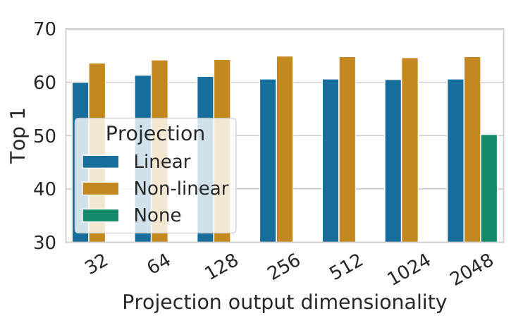
The deck gives a possible explanation. The contrastive loss may discard information that is useful for downstream tasks. It trains the vector \(z\) to be the same under all augmentations. Colour and orientation, for example, may be removed. With the head \(g(\cdot)\) in between, the representation \(h\) can keep more information. We use \(h\) for the downstream task. The paper reports that \(h\) is more than 10 points better than \(z\) (Chen et al., 2020, Sec. 4.2).
SimCLR needs a large batch, and a large batch needs a lot of memory
The figure shows top-1 linear accuracy of a ResNet-50. Each group of bars is one training length, from 100 to 1,000 epochs. Each bar in a group is one batch size, from 256 to 8,192. Larger batches score higher. The effect is largest at 100 epochs: 57.5 with batch 256, and about 64.7 with batch 8,192. The gap shrinks as training gets longer. Each bar is one run from scratch.
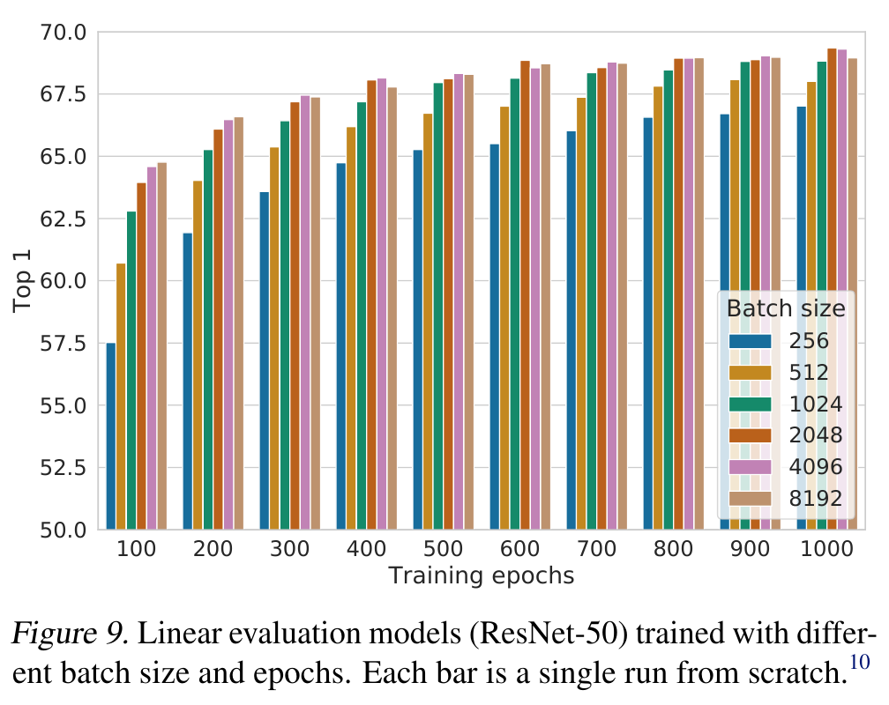
The reason follows from the bound in the InfoNCE section. In SimCLR the negatives come from the batch. A larger batch gives more negatives \(N\), and the bound \(MI[f(x), f(x^+)] - \log(N) \geq -L\) gets tighter. The cost is memory: backpropagation must keep the values of all samples in the batch. The ImageNet experiments need distributed training on TPUs (a type of accelerator chip). The paper uses 32 to 128 TPU cores, depending on the batch size.
MoCo keeps a queue of keys, so the batch size and the number of negatives are separate
Momentum Contrast (MoCo) uses the words query and key (He et al., 2020). A query \(q\) is the vector of one view. A key \(k\) is the vector of another sample to compare with. The positive key comes from another view of the same image. Negative keys come from other images.
The figure shows the parts. The query view goes through an encoder to give \(q\). The key views go through a momentum encoder to give \(k_0, k_1, k_2, \dots\). The keys form a queue. The model computes the similarity of \(q\) with the keys, and then the contrastive loss. No gradient flows into the keys (marked "no_grad").
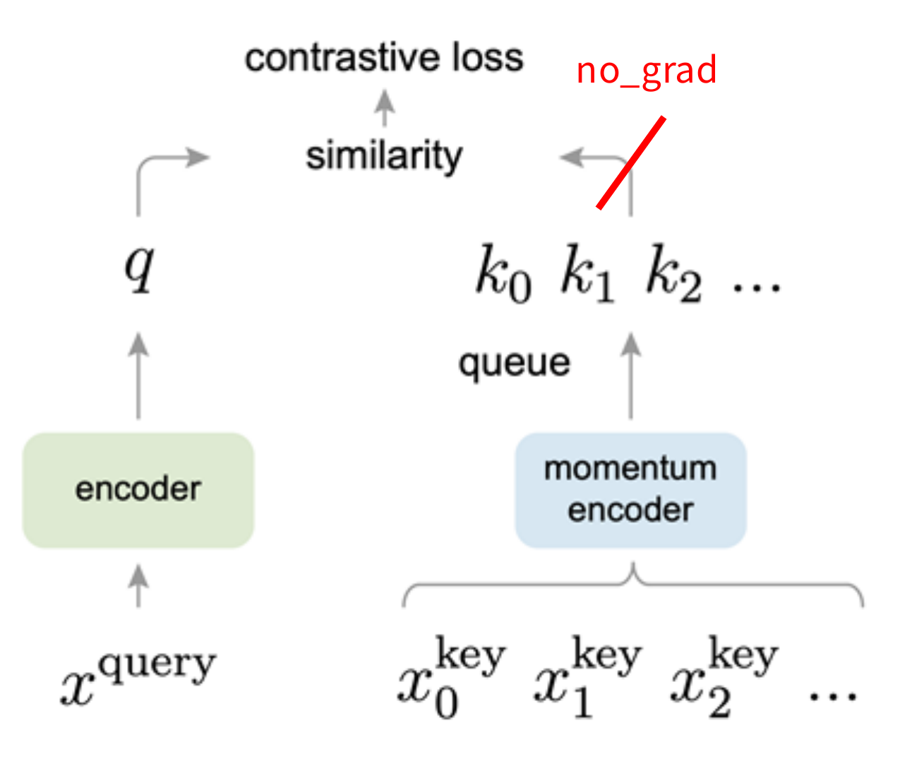
MoCo differs from SimCLR in three ways.
- It keeps a running queue of keys. These keys are the negative samples. A queue is first in, first out: new keys enter and the oldest keys leave.
- It computes gradients and updates the encoder only through the queries.
- It separates the mini-batch size from the number of keys. So it supports a large number of negatives with a small batch. The paper sets the queue size \(K\) to 65,536 for its ImageNet runs (He et al., 2020, Sec. 4.1).
Old keys in the queue came from older versions of the encoder. They must stay consistent with new keys. So the key encoder changes slowly. Its parameters \(\theta_k\) follow the parameters \(\theta_q\) of the query encoder by a momentum update:
\[ \theta_k \leftarrow m\,\theta_k + (1-m)\,\theta_q \]Here \(m\) is the momentum coefficient, a number from 0 to 1. A value near 1 means that \(\theta_k\) moves only a little in each step. Back-propagation updates only \(\theta_q\). The paper uses \(m = 0.999\) (He et al., 2020, Sec. 3.2).
The MoCo training step: loss on queries, momentum update on keys, queue update
Algorithm 1 of He et al. (2020) is short. For each minibatch of \(N\) images:
- Make two random augmentations of each image: \(x_q\) and \(x_k\). This makes a positive pair.
- The query encoder gives the queries \(q\) from \(x_q\). The key encoder gives the keys \(k\) from \(x_k\). The code calls
k.detach(), so no gradient goes to the keys. - Compute the positive logits (the scores before the softmax): the dot product of each \(q\) with its own \(k\).
- Compute the negative logits: the dot product of each \(q\) with every key in the queue.
- Join the positive and negative logits. Divide them by the temperature \(t\) (0.07 in the paper, Sec. 3.3). The label of the correct class is index 0, the positive. Apply the cross-entropy loss. This is the InfoNCE loss.
- Update the query encoder by gradient descent (SGD) on the loss.
- Update the key encoder by the momentum update above.
- Add the new keys to the queue and remove the oldest keys.
Next: how does MoCo compare with SimCLR, and what happens when we combine them?
MoCo v2 combines the ideas of SimCLR and MoCo
MoCo v2 is a hybrid (Chen et al., 2020b). From SimCLR it takes the non-linear projection head and strong data augmentation. From MoCo it takes the momentum-updated queue, which allows a large number of negatives. The deck notes that it needs no TPU.
Table 1 of the MoCo v2 paper tests the changes one by one. It uses a ResNet-50. "MLP" is a projection head with a hidden layer. "aug+" is extra blur augmentation. "cos" is a cosine learning-rate schedule. The score is ImageNet linear accuracy.
| Case | MLP | aug+ | cos | Epochs | Accuracy (%) |
|---|---|---|---|---|---|
| MoCo v1 | 200 | 60.6 | |||
| (a) | yes | 200 | 66.2 | ||
| (b) | yes | 200 | 63.4 | ||
| (c) | yes | yes | 200 | 67.3 | |
| (d) | yes | yes | yes | 200 | 67.5 |
| (e) | yes | yes | yes | 800 | 71.1 |
Source: Chen et al. (2020b), Table 1. The projection head alone adds 5.6 points, and the extra augmentation alone adds 2.8 points (computed here). Together with the cosine schedule they reach 67.5 at 200 epochs. A longer run of 800 epochs reaches 71.1. A non-linear projection head and strong data augmentation are crucial for contrastive learning.
MoCo v2 beats SimCLR with a much smaller batch
Table 2 compares MoCo v2 with SimCLR. Both use a ResNet-50 and the same three changes (MLP, aug+, cos).
| Method | Epochs | Batch size | Accuracy (%) |
|---|---|---|---|
| MoCo v1 | 200 | 256 | 60.6 |
| SimCLR | 200 | 256 | 61.9 |
| SimCLR | 200 | 8,192 | 66.6 |
| MoCo v2 | 200 | 256 | 67.5 |
| Longer training | |||
| SimCLR | 1,000 | 4,096 | 69.3 |
| MoCo v2 | 800 | 256 | 71.1 |
Source: Chen et al. (2020b), Table 2. At 200 epochs, SimCLR with batch 256 scores 61.9 and with batch 8,192 scores 66.6. MoCo v2 scores 67.5 with batch 256. With longer training, MoCo v2 reaches 71.1 and SimCLR reaches 69.3, and the SimCLR run uses a batch 16 times larger (4,096 against 256; computed here). The cause is that MoCo v2 separates the mini-batch size from the number of negatives.
MoCo needs much less memory and time
Table 3 gives the cost on 8 V100 GPUs with 16 GB each. "End-to-end" means the SimCLR way: the negatives come from the same batch, and the gradient goes through all of them.
| Mechanism | Batch size | Memory per GPU | Time for 200 epochs |
|---|---|---|---|
| MoCo | 256 | 5.0 GB | 53 hours |
| End-to-end | 256 | 7.4 GB | 65 hours |
| End-to-end | 4,096 | 93.0 GB (estimate) | not available |
Source: Chen et al. (2020b), Table 3. The end-to-end run with batch 4,096 needs an estimated 93.0 GB per GPU. This is about 18.6 times the MoCo value and far above the 16 GB of the GPU (computed here). It does not fit, so the authors give no time.
Instance contrast uses images; sequence contrast uses order in time
There are two kinds of contrastive learning. Instance-level contrastive learning compares positive and negative instances. SimCLR and MoCo are examples. Sequence-level contrastive learning uses the order of a sequence in time. Contrastive Predictive Coding (CPC) is the example (van den Oord et al., 2018).
In CPC, an encoder \(g_{enc}\) maps the data at each time step \(x_t\) to a vector \(z_t\). An autoregressive model \(g_{ar}\) reads the steps in order and gives a context vector \(c_t\). An autoregressive model predicts each element from the elements before it. The context \(c_t\) must predict the vectors \(z\) of later steps.
CPC predicts future codes from a context and uses InfoNCE to pick the true one
The name has three words.
- Contrastive: the model contrasts "right" and "wrong" sequences.
- Predictive: the model predicts future patterns from the current context.
- Coding: the model learns useful feature vectors, called a code, for downstream tasks.
The figure shows CPC on a sequence of digit patches. The context is the digits 2, 3, 4 and 5. The true future is the digits 6, 7, 8 and 9. The wrong futures are other patches (for example 9, 5, 0, 4). The model must pick the true future. The digit examples were added by CS231n; the diagram is from the paper.
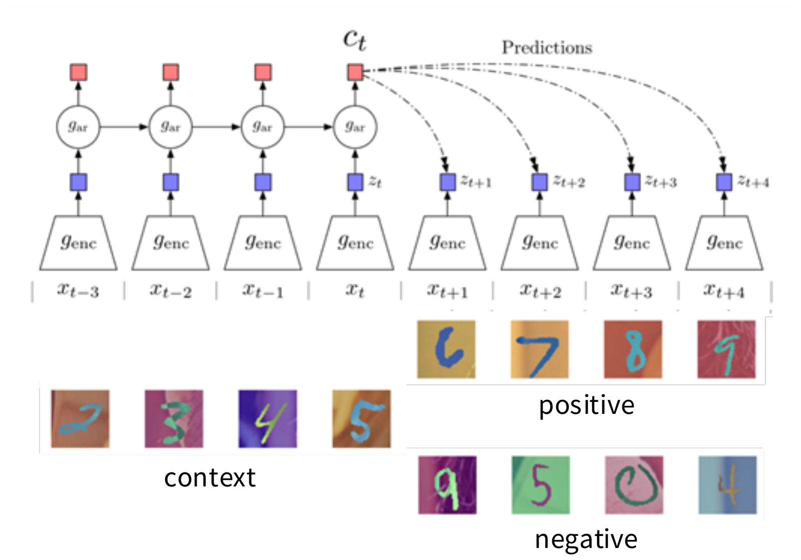
The method has three steps.
- Encode every sample in the sequence: \(z_t = g_{enc}(x_t)\).
- Summarise the context (for example, half of the sequence) into a context code \(c_t\) with the autoregressive model \(g_{ar}\). The original paper uses a GRU, a type of recurrent network.
- Compute an InfoNCE loss between the context \(c_t\) and a future code \(z_{t+k}\), where \(k\) is the number of steps ahead. The score depends on \(k\):
Here \(W_k\) is a trainable matrix. It has one value for each step \(k\). The score is high when \(c_t\) predicts \(z_{t+k}\) well. The positive is the true future code. The negatives are codes of other samples. The loss is the InfoNCE loss from the first section, with this score in place of \(s\).
CPC on audio gives features that classify speakers almost as well as supervised training
In the first example, CPC reads raw audio. The waveform is cut into time steps \(x\). The encoder \(g_{enc}\) turns each step into \(z\). The model \(g_{ar}\) summarises the past into \(c_t\). The context \(c_t\) predicts \(z\) for the next steps. The figure on the page shows four steps ahead; the paper's audio runs predict 12 steps (van den Oord et al., 2018, Sec. 3.1).
The left side of the next figure is a t-SNE plot of the CPC representations of 10 speakers (out of 251). t-SNE draws high-dimensional vectors in two dimensions. Each colour is one speaker. The speakers form separate groups. The right side is a table of linear classification on LibriSpeech (accuracy in %).
| Features | Phone classification | Speaker classification |
|---|---|---|
| Random initialization | 27.6 | 1.87 |
| MFCC features | 39.7 | 17.6 |
| CPC | 64.6 | 97.4 |
| Supervised | 74.6 | 98.5 |
Source: van den Oord et al. (2018), Table 1. A phone is a basic speech sound. MFCC features are a standard hand-made audio feature. For speaker classification, CPC is 1.1 points below the supervised model (computed here). For phone classification, it is 10.0 points below.
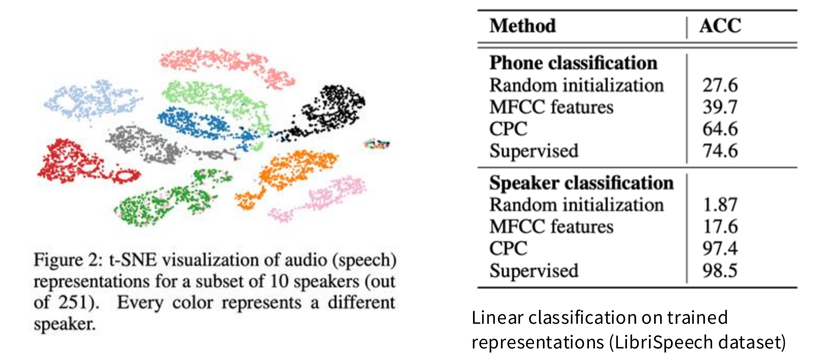
CPC on images treats rows of patches as a sequence
CPC also works for images. We split the image into patches. We treat the rows of patches, from top to bottom, as a sequence. The top rows are the context. They predict the bottom rows.
In the figure, a 256 by 256 pixel image is cut into patches of 64 by 64 pixels, with 50% overlap. The paper uses a 7 by 7 grid of patches (van den Oord et al., 2018, Sec. 3.2). The encoder gives a code \(z\) for each patch. The autoregressive model reads the codes of the upper rows and gives a context \(c_t\). The context predicts the codes \(z_{t+2}\), \(z_{t+3}\) and \(z_{t+4}\) of patches in the rows below.
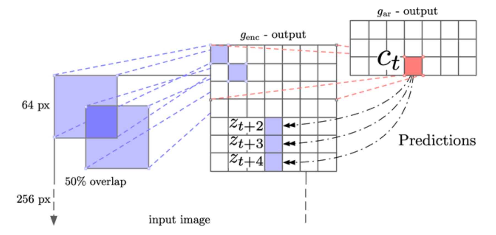
SimCLR, MoCo and CPC all use positive and negative samples. The last segment of Part B asks if a network can learn without labels in a different way: self-distillation, in DINO.
DINO: a student learns from a teacher, with no labels and no negatives
Part B so far used negatives. SimCLR and MoCo push a positive pair together and push other images away. CPC does the same for sequences. A last family of methods needs no negatives. DINO is the example in this part (Caron et al., 2021). The name stands for "self-distillation with no labels".
Self-distillation means that a student network learns to match the output of a teacher network, and the teacher comes from the student itself. The teacher is not a separate pre-trained model. The next sections show how the teacher is built.
The paper trains a Vision Transformer (ViT) with no labels. A ViT cuts an image into patches and reads them as a sequence of tokens. It adds one extra token, the CLS token, to stand for the whole image. The paper looks at the self-attention of the CLS token in the last layer. Self-attention is the step that sets how much one token reads from each other token.
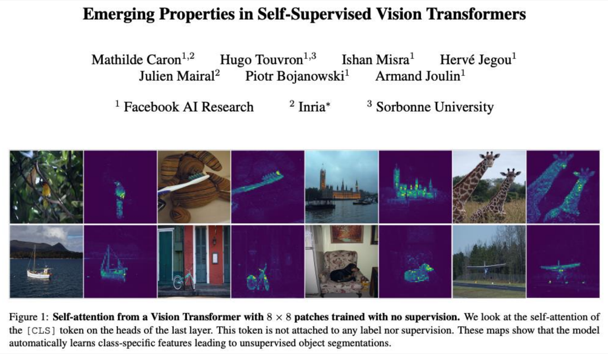
The conclusion: a ViT trained with no labels still learns where the objects are. The next section shows the training steps that produce this result.
The teacher is a slow average of past students
DINO uses two networks with the same architecture. They are the student \(g_{\theta_{student}}\) and the teacher \(g_{\theta_{teacher}}\). The symbols \(\theta_{student}\) and \(\theta_{teacher}\) stand for their weights. The steps for one image \(x\) are:
- Apply two random augmentations to \(x\). This gives two views, \(x_1\) and \(x_2\).
- The student reads one view. The teacher reads the other view.
- Each network ends in a softmax. A softmax turns the output scores into positive numbers that sum to 1. The student gives \(p_1\) and the teacher gives \(p_2\).
- The teacher output is centred (see the next section). The teacher gets no gradient. The paper marks this as "sg", for stop gradient.
- The loss is \(-p_2 \log p_1\). It is small when the student output \(p_1\) matches the teacher output \(p_2\).
Backpropagation changes the student only. The teacher changes through an exponential moving average (EMA) of the student weights. An EMA is an average in which older values count less and less. The update at each step is:
\[ \theta_{teacher} \leftarrow \tau\,\theta_{teacher} + (1-\tau)\,\theta_{student} \]- \(\theta_{teacher}\) and \(\theta_{student}\) are the weights of the teacher and the student.
- \(\tau\) is a number close to 1. It sets how slowly the teacher moves. The deck gives 0.996.
- With \(\tau = 0.996\), each step keeps 99.6% of the old teacher and adds 0.4% of the student (computed here).
The paper says the weight \(\tau\) (called \(\lambda\) there) follows a cosine schedule from 0.996 to 1 during training (Caron et al., 2021, Sec. 3.1). So 0.996 is the start value.
The teacher is an average of past students. So it changes more slowly than the student, and its targets are steadier. The paper also finds that the teacher performs better than the student during training (Sec. 3.1). In the paper's tests (Sec. 5.2), a teacher that copies the recent student weights does not converge. A teacher that is the student from the previous epoch does not collapse and gives results close to other methods. The EMA teacher gives the best results of the options tested (Fig. 6, right).
The loss compares two output distributions. The next section gives the exact loss, the centre and the sharpening that stop the networks from collapsing.
The loss, the centre and the sharpening are three short steps
The paper gives the method as pseudocode (Caron et al., 2021, Algorithm 1; the version without multi-crop). Multi-crop means that the paper also feeds small local views of an image to the student. The deck does not use it, and this page does not use it either.
The symbols in the pseudocode are:
- \(g_s\) and \(g_t\): the student and the teacher network. Each gives a vector of \(K\) numbers for one view. The paper's default is \(K = 65536\) (the ablation on output dimension).
- \(s_1, s_2\) and \(t_1, t_2\): the student and teacher outputs for views 1 and 2. Each has size \(n \times K\), where \(n\) is the number of images in the minibatch.
- \(C\): the centre, a vector of \(K\) numbers.
- \(\tau_s\) and \(\tau_t\): the student and teacher temperatures. A temperature divides the scores before the softmax. A low temperature makes the output more peaked. The paper uses \(\tau_s = 0.1\), and \(\tau_t\) rises from 0.04 to 0.07 during the first 30 epochs.
- \(l\) and \(m\): the momentum rates of the teacher and of the centre. In the notation of the previous section, \(l\) is \(\tau\).
One training step has these parts:
- Two views. Make two random views of each image. Give both to the student and to the teacher.
- The loss. The loss is \(H(t_1, s_2)/2 + H(t_2, s_1)/2\). Each term compares the teacher output for one view with the student output for the other view. The loss averages the two terms. The student never matches the teacher on the same view.
- The function H. It has three steps:
- Stop the gradient into \(t\), with
t.detach(). The teacher gets no gradient. - Compute the student distribution: \(s \leftarrow \mathrm{softmax}(s/\tau_s)\).
- Compute the teacher distribution: \(t \leftarrow \mathrm{softmax}((t-C)/\tau_t)\). Subtracting \(C\) is centring. Dividing by the low \(\tau_t\) is sharpening.
- Stop the gradient into \(t\), with
- Update the student. Run backpropagation and one step of stochastic gradient descent (SGD) on the student.
- Update the teacher. Use the EMA rule of the previous section.
- Update the centre. \(C \leftarrow m\,C + (1-m)\,\mathrm{mean}([t_1, t_2])\). The centre is a moving average of the teacher outputs over the minibatch.
Centring and sharpening exist to avoid collapse. In a collapse, the output is the same for every input. It is either uniform over all \(K\) entries or dominated by one entry. The paper says that centring stops one entry from dominating, but pushes the output toward uniform. Sharpening has the opposite effect. Together they balance each other, and this is enough to avoid collapse when a momentum teacher is used (Caron et al., 2021, Sec. 3.1 and Sec. 5.3).
The deck next shows what a later version of the method learns. It is called DINOv2.
DINOv2 patch features show the same parts in different images
DINOv2 is the second version of DINO (Oquab et al., 2024). The deck uses one figure from it. The figure uses PCA (principal component analysis), a method that finds the main directions in which a set of feature vectors differ.
For each column of images (a to d), the authors compute a PCA over the patch features of all images in that column. A patch feature is the feature that the network gives for one image patch. They keep the first three PCA components and show each one as one colour channel (red, green, blue). They also remove the background by thresholding the first component (Fig. 1 caption).
The same parts get the same colours in different images. A wing has one colour on a bird and on a plane. This holds across changes of pose, style and even object, as the paper's caption says. The conclusion: the patch features of DINOv2 carry the meaning of image parts, not only of whole images. Part C returns to the DINO family and to patch features.
Summary: all contrastive methods use one formula
The next four sections repeat the four methods of Part B in short form. The first one gives the common formula. Let \(f(x)\) be the feature of an input \(x\). Let \(x^+\) be a positive example of \(x\), and \(x^-\) a negative one. The general idea is that a score function \(\text{score}\) should give a much higher value to the positive pair than to a negative pair:
\[ \text{score}(f(x), f(x^+)) \gg \text{score}(f(x), f(x^-)) \]The InfoNCE loss turns this into an \(N\)-way classification. The model must pick the one positive among \(N\) candidates: one positive and \(N-1\) negatives (van den Oord et al., 2018). The loss is:
\[ L = -\mathbb{E}_X \left[ \log \frac{\exp\big(s(f(x), f(x^+))\big)}{\exp\big(s(f(x), f(x^+))\big) + \sum_{j=1}^{N-1} \exp\big(s(f(x), f(x_j^-))\big)} \right] \]- \(s(\cdot,\cdot)\): the score of two features. A higher score means that the model finds the two features more alike.
- \(x_j^-\): the \(j\)-th negative example. There are \(N-1\) of them.
- The fraction is the share of the positive in the sum over all \(N\) candidates. It is close to 1 when the positive scores far above the negatives.
- \(\mathbb{E}_X\): the average over many inputs \(x\). The minus sign turns "high share" into "low loss".
The loss is also a lower bound on the mutual information between \(f(x)\) and \(f(x^+)\). Mutual information measures how much one of them tells about the other. The bound is:
\[ \mathrm{MI}[f(x), f(x^+)] - \log N \ge -L \]A low loss therefore shows that the mutual information is at least \(\log N - L\). More negatives raise \(\log N\), so the bound can become larger when \(N\) is larger.
The deck's slide has one closing bracket missing in the numerator and in both terms of the denominator. The equation above has the balanced form.
Summary: SimCLR needs a large batch, MoCo does not
SimCLR is a simple framework for contrastive learning (Chen et al., 2020, Fig. 2). Two augmentations \(t\) and \(t'\) of an image \(x\) give two views. The encoder \(f\) gives the representations \(h_i\) and \(h_j\). The projection head \(g\) gives \(z_i\) and \(z_j\). Training maximises the agreement of \(z_i\) and \(z_j\).
- Key idea: a non-linear projection head allows more flexible representation learning.
- Strength: the method is simple to implement and effective for visual representations.
- Weakness: it needs a large training batch to be effective, and it has a large memory footprint. The negatives come from the same batch, so a larger batch gives more negatives.
MoCo (versions 1 and 2) uses a momentum encoder for the samples (He et al., 2020, Fig. 1). The momentum encoder is an EMA of the query encoder, in the same way as the DINO teacher. MoCo keeps its negatives in a queue of earlier keys. This separates the number of negatives from the minibatch size. So MoCo allows large-batch training without a TPU. A TPU is a special accelerator chip for training.
MoCo v2 adds the key ideas of SimCLR to MoCo (Chen et al., 2020): the non-linear projection head and strong data augmentation. The details of both methods are in Part B.
These two methods use instances of images as the unit. The next section gives the third method, which uses sequences.
Summary: CPC contrasts sequences and works less well for images
CPC is sequence-level contrastive learning (van den Oord et al., 2018). It contrasts the right sequence with a wrong sequence. It uses an InfoNCE loss with a time-dependent score function: the score depends on how many steps ahead the model predicts.
CPC applies to many kinds of data, for example audio and images. But it is not as effective for learning image representations as the instance-level methods, SimCLR and MoCo.
That ends the four methods. The next section puts them in one table.
Part B in short: what each method contrasts and what it needs
| Method | Main idea | What it needs or costs |
|---|---|---|
| Contrastive learning (general) | Pull a positive pair together. Push negatives away. The InfoNCE loss is an \(N\)-way classification among positive and negative samples. | Negatives |
| SimCLR | A non-linear projection head and strong augmentation. | A large batch |
| MoCo | A momentum key encoder and a queue of keys. | The number of negatives no longer depends on the batch size |
| CPC | Contrast the right sequence with a wrong one. | Works less well than instance-level methods for images |
| DINO | Self-distillation with no labels. A student matches a teacher. | No negatives |
Part C covers today's best vision encoders and how to choose one among the families of methods in Part A and Part B.
Advanced topics and today's state of the art
Today's best encoders combine the three methods, at scale. Which one should we use for a given task?
This part follows Georgia Tech CS 8803-VLM Lecture 3 (Kira, 2026), with two sections of our own on trade-offs. The text is ours; the results come from the papers cited.
Part B ended with these methods. Contrastive learning pulls a positive pair together and pushes negatives apart, with the InfoNCE loss. SimCLR needs a large batch. MoCo uses a momentum encoder and a queue of keys. CPC contrasts sequences. DINO makes a student match a teacher, with no negatives and no labels. Part C asks what we want from an encoder, which methods give it, and how to choose.
What we want from a vision foundation model
A vision foundation model is, in this lecture, one encoder whose features are good enough that a linear head on top is competitive. We want five properties.
- General purpose. One frozen backbone (the encoder, with its weights not changed) serves many tasks. No task needs its own fine-tuning.
- Global features. One vector for the whole image. They serve classification, retrieval and image-text matching. A [CLS] token gives this vector.
- Dense features. One vector for each patch. They serve segmentation, depth, correspondence, tracking and grounding.
- Scales. The encoder gets better with more data and compute, with no more annotation.
- A token interface for a language model. A grid of h×w patch embeddings is already a sequence of tokens.
Which training objective gives both kinds of features?
Three families of self-supervised objectives
Parts A and B give three families of objectives. Each has a strength and a weakness.
| Family | Idea | Examples | Strong at | Weak at |
|---|---|---|---|---|
| Contrastive (joint embedding) | Two augmented views of one image attract. Different images repel. | SimCLR, MoCo | Global, linear-probe semantics | Needs negatives and large batches. Dense features are mediocre. |
| Masked image modelling (MIM) | Hide most patches. Reconstruct the missing pixels or tokens. | BEiT (Bao et al., 2022), MAE, iBOT | Scalable pre-training. Strong after fine-tuning. | Frozen and linear-probe features are weak. |
| Self-distillation (no negatives) | A student matches the output distribution of an EMA teacher across views. | BYOL (Grill et al., 2020), DINO, DINOv2, DINOv3 | Frozen features. Object structure appears without labels. | The training must prevent collapse explicitly. |
DINOv2 and DINOv3 deliberately combine the last two families. An image-level self-distillation loss gives global semantics. A patch-level masked loss, iBOT, gives dense features (Oquab et al., 2024; Siméoni et al., 2025). The next question: does this combination keep the dense features good over a long training run?
Dense features degrade during long training
The DINOv3 authors trained a model for a long time and watched two kinds of score. ImageNet linear-probe accuracy (a linear classifier on the global feature) rose all the time. Segmentation quality on dense tasks fell after about 200,000 iterations (Siméoni et al., 2025, §4.1).
Cosine similarity measures how closely two feature vectors point in the same direction. At 200k iterations the bright area covers the sheep and little else. Later, unrelated patches also become bright. The patch features lose their locality.
The authors explain it this way. The global objective slowly dominates the patch-level iBOT loss, and the iBOT loss cannot hold the balance. So training for longer or with a bigger model had stopped paying off for dense tasks. Is there a way to keep the patch structure fixed without freezing the features?
Gram anchoring repairs the patch similarities
Gram anchoring adds a loss on the structure of patch-to-patch similarities. It works in these steps.
- Take an image with \(P\) patches. The network gives each patch a feature vector of dimension \(d\), and we normalise each vector to length 1 (L2 normalisation).
- Stack the vectors of the student into a matrix \(X_s\) of size \(P\times d\). Do the same for the Gram teacher to get \(X_G\). The Gram teacher is an earlier EMA checkpoint, from a time when the dense maps were still clean.
- The product \(X X^{\top}\) is the Gram matrix. Entry \((i,j)\) is the dot product of patch \(i\) and patch \(j\), so it records how similar the two patches are.
- The loss compares the two Gram matrices. \(\lVert\cdot\rVert_F\) is the Frobenius norm: the square root of the sum of the squares of all entries.
The loss constrains only the table of similarities. The individual features stay free to move, as long as their similarities keep the same structure. The authors compute it on the global crops only.
They apply it as a refinement stage that starts after 1M iterations. They refresh the Gram teacher every 10k iterations, when it becomes identical to the main EMA teacher (Siméoni et al., 2025, §4.2). The refinement objective is:
\[ L_{\text{Ref}} = w_D\, L_{\text{DINO}} + L_{\text{iBOT}} + w_{DK}\, L_{\text{DKoleo}} + w_{\text{Gram}}\, L_{\text{Gram}} \]Here \(L_{\text{DINO}}\) is the image-level self-distillation loss and \(L_{\text{iBOT}}\) is the patch-level masked loss. \(L_{\text{DKoleo}}\) is a third loss term of the DINOv3 recipe that the deck does not define. The weights \(w_D\), \(w_{DK}\) and \(w_{\text{Gram}}\) set the size of each term.
The authors observe that the late application still repairs features that were already degraded. On the ADE20k dense linear probe (segmentation, mean intersection over union, mIoU, higher is better) the score goes from 50.3 to 55.7. NYUv2 depth error (RMSE, lower is better) goes from 0.307 to 0.281 (Siméoni et al., 2025, Fig. 10 and the ablation table in §4.2).
With the repair known, how do the resulting encoders compare with encoders trained on image-text pairs?
On a frozen backbone, self-supervised encoders lead on dense tasks
The table compares five backbones with no fine-tuning. Every score comes from a linear probe on frozen features. "Image–text (weak)" means that image captions supervise the encoder. The columns:
- ADE20k: segmentation, mIoU, higher is better.
- NYUv2: depth, RMSE, lower is better.
- DAVIS: video object tracking, J&F, higher is better. The values are at medium resolution.
- IN1k linear: ImageNet-1k top-1 accuracy of a linear classifier, higher is better.
| Backbone | Supervision | ADE20k mIoU ↑ | NYUv2 RMSE ↓ | DAVIS J&F ↑ | IN1k linear ↑ |
|---|---|---|---|---|---|
| SigLIP 2 g/16 | image–text (weak) | 42.7 | 0.494 | 62.3 | 89.1 |
| PE core G/14 | image–text (weak) | 38.9 | 0.590 | 53.1 | 89.3 |
| DINOv2 g/14 | self-supervised | 49.5 | 0.372 | 73.6 | 87.3 |
| PE spatial G/14 | image–text + distillation | 49.3 | 0.362 | 74.5 | not reported |
| DINOv3 7B/16 | self-supervised | 55.9 | 0.309 | 79.7 | 88.4 |
Source: Siméoni et al. (2025), Tables 3, 5 and 7, as in Kira (2026). SigLIP 2: Tschannen et al. (2025). The numbers match the DINOv3 paper.
The ImageNet column favours the image–text encoders: 89.1 and 89.3 against 87.3 for DINOv2. They lead on global, nameable semantics. On every dense and spatial column, the self-supervised encoders lead, often by a wide margin. DINOv3 has the best dense scores and, at 88.4, nearly closes the global gap.
The table shows what each encoder scores. What does each method need to get there?
Each method puts its cost in a different place
The table lists the data processing and the compute of each method. Each number comes from that paper's own set-up, so this is not a controlled comparison.
| Method | Data processing | Compute |
|---|---|---|
| MAE | ImageNet. A random crop is enough. | The encoder reads 25% of the patches. ViT-L: 31 hours on 128 TPU v3 cores. |
| SimCLR, MoCo | Crop and colour change are necessary. | Many negatives: a batch of 4,096, or a queue of 65,536. |
| CLIP | 400M web image–text pairs. | Batch 32,768. ViT-L/14: 12 days on 256 V100 GPUs. |
| DINO, DINOv2 | Multi-crop. 1.2B web images, curated to 142M. | Two networks. DINOv2 g/14: 22,016 A100 GPU-hours. |
Sources: He et al. (2022), Table 1e and §4.2 (1,600 epochs); Chen et al. (2020), Fig. 5 and §2.2; He et al. (2020), §4; Radford et al. (2021), §2.2 and §2.5; Caron et al. (2021), §3.2; Oquab et al. (2024), §3 and Table 14.
MAE saves compute because the encoder reads only a quarter of the patches. SimCLR and MoCo need strong augmentation and many negatives. CLIP needs a very large set of captioned images. DINO and DINOv2 train two networks and, for DINOv2, curate the data first. The best choice depends on the data and the compute you have. The next question is how to use the trained encoder.
Adaptation: train none, some or all of the weights
| Level | What you train | Cost and fit |
|---|---|---|
| Zero-shot | Nothing, and you give no labels. | Image–text models: CLIP, SigLIP 2, or DINOv3 with dino.txt. |
| Frozen + k-NN or linear head | At most a linear layer. | Few labels, little compute. The features must be good as they are: DINOv3, CLIP. |
| LoRA | Small low-rank updates. The original weights stay frozen. | Described in Lecture 1, session 02. |
| Full fine-tuning | All weights. | Most labels and compute. MAE is strong here. |
Zero-shot: Radford et al. (2021). k-NN: Caron et al. (2021). LoRA: Hu et al. (2022).
The test can change the winner. For a ViT-L, MoCo v3 (Chen et al., 2021) and MAE give these ImageNet accuracies (%), read from the plot labels of He et al. (2022), Fig. 9:
| Test | MoCo v3 | MAE | Winner |
|---|---|---|---|
| Frozen backbone | 77.6 | 73.5 | MoCo v3 |
| Tune one block | 79.9 | 81.0 | MAE |
Part C in short
- A vision foundation model is one frozen backbone for many tasks. It gives global and dense features and scales without annotation.
- There are three families of objectives: contrastive (SimCLR, MoCo), masked image modelling (MAE) and self-distillation (DINO). DINOv2 and DINOv3 combine the last two.
- In DINOv3, dense features degrade in long training. Gram anchoring repairs them.
- On a frozen backbone, self-supervised encoders lead on dense tasks: segmentation, depth and tracking. Language-supervised encoders lead on global, nameable semantics.
- Each method puts its cost in a different place, and the test can change the winner. Choose by the task, the data, the compute and the adaptation.
Where we got to
The lecture began with one question. Without labels, what should a model predict? There are three answers. Each has one design choice that stops the model from cheating, which means finding a trivial solution that satisfies the loss.
| Method | What the model predicts | How it can cheat | What stops the cheat |
|---|---|---|---|
| MAE (He et al., 2022) | The hidden image patches | Copy from the neighbouring patches | Hide 75% of the patches |
| SimCLR (Chen et al., 2020) | Which other view belongs to this image | Give every image the same vector | The other images in the batch (negatives) |
| DINO (Caron et al., 2021) | The teacher's output for another view of the image | The same output for every image | Centring, sharpening and a slow teacher |
One point stays open. Captions help with the names of things. Images alone give better features for each patch. Today's encoders combine both. Next week we connect an encoder to an LLM.
Resources
Reading
- Gidaris et al., Unsupervised Representation Learning by Predicting Image Rotations, ICLR 2018. The rotation task (Part A).
- He et al., Masked Autoencoders Are Scalable Vision Learners, CVPR 2022. §3 (the method).
- Chen et al., A Simple Framework for Contrastive Learning of Visual Representations, ICML 2020. §2 (the framework) and §3 (design choices).
- He et al., Momentum Contrast for Unsupervised Visual Representation Learning, CVPR 2020. §3.
- van den Oord et al., Representation Learning with Contrastive Predictive Coding, 2018. §2.
- Caron et al., Emerging Properties in Self-Supervised Vision Transformers, ICCV 2021. §3 (the method).
- Siméoni et al., DINOv3, 2025. The Gram anchoring section.
The official reading list for the module is on Canvas.
Code
- facebookresearch/dino — the reference code of DINO.
- facebookresearch/mae — the reference code of MAE.
- facebookresearch/moco — the reference code of MoCo.
References
Every work cited on this page, in APA style with shortened author lists. Titles link to the paper.
Next: Lecture 4, large multi-modal models
This lecture used images only. Lecture 4, on Wed 4 Nov 2026, joins images and text: it extends LLMs to large multi-modal models.
Large multi-modal models
How an LLM takes visual data as input, and what such models do.